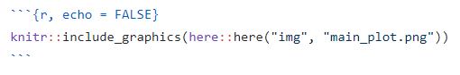
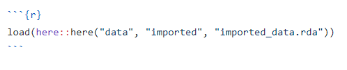

<!DOCTYPE html>

<html>

<head>

<meta charset="utf-8" />
<meta name="generator" content="pandoc" />
<meta http-equiv="X-UA-Compatible" content="IE=EDGE" />


<title> Making Interactive Case Studies Tutorial</title>

<html>

<head>

<!-- Global site tag (gtag.js) - Google Analytics -->

</head>

<body>


</body>
</html>
<!-- HEAD_CONTENT -->

<style type="text/css">
  code{white-space: pre-wrap;}
  span.smallcaps{font-variant: small-caps;}
  span.underline{text-decoration: underline;}
  div.column{display: inline-block; vertical-align: top; width: 50%;}
  div.hanging-indent{margin-left: 1.5em; text-indent: -1.5em;}
  ul.task-list{list-style: none;}
    </style>


<style type="text/css">
  code {
    white-space: pre;
  }
  .sourceCode {
    overflow: visible;
  }
</style>
<style type="text/css" data-origin="pandoc">
code.sourceCode > span { display: inline-block; line-height: 1.25; }
code.sourceCode > span { color: inherit; text-decoration: inherit; }
code.sourceCode > span:empty { height: 1.2em; }
.sourceCode { overflow: visible; }
code.sourceCode { white-space: pre; position: relative; }
div.sourceCode { margin: 1em 0; }
pre.sourceCode { margin: 0; }
@media screen {
div.sourceCode { overflow: auto; }
}
@media print {
code.sourceCode { white-space: pre-wrap; }
code.sourceCode > span { text-indent: -5em; padding-left: 5em; }
}
pre.numberSource code
  { counter-reset: source-line 0; }
pre.numberSource code > span
  { position: relative; left: -4em; counter-increment: source-line; }
pre.numberSource code > span > a:first-child::before
  { content: counter(source-line);
    position: relative; left: -1em; text-align: right; vertical-align: baseline;
    border: none; display: inline-block;
    -webkit-touch-callout: none; -webkit-user-select: none;
    -khtml-user-select: none; -moz-user-select: none;
    -ms-user-select: none; user-select: none;
    padding: 0 4px; width: 4em;
    color: #aaaaaa;
  }
pre.numberSource { margin-left: 3em; border-left: 1px solid #aaaaaa;  padding-left: 4px; }
div.sourceCode
  {  background-color: #f8f8f8; }
@media screen {
code.sourceCode > span > a:first-child::before { text-decoration: underline; }
}
code span.al { color: #ef2929; } /* Alert */
code span.an { color: #8f5902; font-weight: bold; font-style: italic; } /* Annotation */
code span.at { color: #c4a000; } /* Attribute */
code span.bn { color: #0000cf; } /* BaseN */
code span.cf { color: #204a87; font-weight: bold; } /* ControlFlow */
code span.ch { color: #4e9a06; } /* Char */
code span.cn { color: #000000; } /* Constant */
code span.co { color: #8f5902; font-style: italic; } /* Comment */
code span.cv { color: #8f5902; font-weight: bold; font-style: italic; } /* CommentVar */
code span.do { color: #8f5902; font-weight: bold; font-style: italic; } /* Documentation */
code span.dt { color: #204a87; } /* DataType */
code span.dv { color: #0000cf; } /* DecVal */
code span.er { color: #a40000; font-weight: bold; } /* Error */
code span.ex { } /* Extension */
code span.fl { color: #0000cf; } /* Float */
code span.fu { color: #000000; } /* Function */
code span.im { } /* Import */
code span.in { color: #8f5902; font-weight: bold; font-style: italic; } /* Information */
code span.kw { color: #204a87; font-weight: bold; } /* Keyword */
code span.op { color: #ce5c00; font-weight: bold; } /* Operator */
code span.ot { color: #8f5902; } /* Other */
code span.pp { color: #8f5902; font-style: italic; } /* Preprocessor */
code span.sc { color: #000000; } /* SpecialChar */
code span.ss { color: #4e9a06; } /* SpecialString */
code span.st { color: #4e9a06; } /* String */
code span.va { color: #000000; } /* Variable */
code span.vs { color: #4e9a06; } /* VerbatimString */
code span.wa { color: #8f5902; font-weight: bold; font-style: italic; } /* Warning */

</style>
<script>
// apply pandoc div.sourceCode style to pre.sourceCode instead
(function() {
  var sheets = document.styleSheets;
  for (var i = 0; i < sheets.length; i++) {
    if (sheets[i].ownerNode.dataset["origin"] !== "pandoc") continue;
    try { var rules = sheets[i].cssRules; } catch (e) { continue; }
    for (var j = 0; j < rules.length; j++) {
      var rule = rules[j];
      // check if there is a div.sourceCode rule
      if (rule.type !== rule.STYLE_RULE || rule.selectorText !== "div.sourceCode") continue;
      var style = rule.style.cssText;
      // check if color or background-color is set
      if (rule.style.color === '' && rule.style.backgroundColor === '') continue;
      // replace div.sourceCode by a pre.sourceCode rule
      sheets[i].deleteRule(j);
      sheets[i].insertRule('pre.sourceCode{' + style + '}', j);
    }
  }
})();
</script>


<style type="text/css">
#rmd-source-code {
  display: none;
}
</style>


<link rel="stylesheet" href="www/style.css" type="text/css" />


<style type = "text/css">
.main-container {
  max-width: 940px;
  margin-left: auto;
  margin-right: auto;
}
img {
  max-width:100%;
}
.tabbed-pane {
  padding-top: 12px;
}
.html-widget {
  margin-bottom: 20px;
}
button.code-folding-btn:focus {
  outline: none;
}
summary {
  display: list-item;
}
pre code {
  padding: 0;
}
</style>


<!-- tabsets -->

<style type="text/css">
.tabset-dropdown > .nav-tabs {
  display: inline-table;
  max-height: 500px;
  min-height: 44px;
  overflow-y: auto;
  border: 1px solid #ddd;
  border-radius: 4px;
}

.tabset-dropdown > .nav-tabs > li.active:before {
  content: "";
  font-family: 'Glyphicons Halflings';
  display: inline-block;
  padding: 10px;
  border-right: 1px solid #ddd;
}

.tabset-dropdown > .nav-tabs.nav-tabs-open > li.active:before {
  content: "&#xe258;";
  border: none;
}

.tabset-dropdown > .nav-tabs.nav-tabs-open:before {
  content: "";
  font-family: 'Glyphicons Halflings';
  display: inline-block;
  padding: 10px;
  border-right: 1px solid #ddd;
}

.tabset-dropdown > .nav-tabs > li.active {
  display: block;
}

.tabset-dropdown > .nav-tabs > li > a,
.tabset-dropdown > .nav-tabs > li > a:focus,
.tabset-dropdown > .nav-tabs > li > a:hover {
  border: none;
  display: inline-block;
  border-radius: 4px;
  background-color: transparent;
}

.tabset-dropdown > .nav-tabs.nav-tabs-open > li {
  display: block;
  float: none;
}

.tabset-dropdown > .nav-tabs > li {
  display: none;
}
</style>

<!-- code folding -->
<style type="text/css">
.code-folding-btn { margin-bottom: 4px; }
</style>


<style type="text/css">

#section-TOC {
  margin: 25px 0px 20px 0px;
}
@media (max-width: 768px) {
#section-TOC {
  position: relative;
  width: 100%;
}
}

@media print {
.toc-content {
  /* see https://github.com/w3c/csswg-drafts/issues/4434 */
  float: right;
}
}

.toc-content {
  padding-left: 30px;
  padding-right: 40px;
}

div.main-container {
  max-width: 1200px;
}

div.tocify {
  width: 20%;
  max-width: 260px;
  max-height: 85%;
}

@media (min-width: 768px) and (max-width: 991px) {
  div.tocify {
    width: 25%;
  }
}

@media (max-width: 767px) {
  div.tocify {
    width: 100%;
    max-width: none;
  }
}

.tocify ul, .tocify li {
  line-height: 20px;
}

.tocify-subheader .tocify-item {
  font-size: 0.90em;
}

.tocify .list-group-item {
  border-radius: 0px;
}


</style>


</head>

<body>


<div class="container-fluid main-container">


<!-- setup 3col/9col grid for toc_float and main content  -->
<div class="row">
<div class="col-xs-12 col-sm-4 col-md-3">
<div id="section-TOC" class="tocify">
</div>
</div>

<div class="toc-content col-xs-12 col-sm-8 col-md-9">


<div id="section-header">

<div class="btn-group pull-right float-right">
<button type="button" class="btn btn-default btn-xs btn-secondary btn-sm dropdown-toggle" data-toggle="dropdown" aria-haspopup="true" aria-expanded="false"><span>Code</span> <span class="caret"></span></button>
<ul class="dropdown-menu dropdown-menu-right" style="min-width: 50px;">
<li><a id="rmd-download-source" href="#">Download Rmd</a></li>
</ul>
</div>


<h1 class="title toc-ignore"><p> Making Interactive Case Studies Tutorial</p></h1>

</div>


<!-- Open all links in new tab-->
<p><base target="_blank"/></p>
<p>
 
</p>
<div id="section-setting-up" class="section level1">
<h1><strong>1. Setting Up</strong></h1>
<hr />
<div id="section-www-directory" class="section level2">
<h2><strong><code>www</code> Directory</strong></h2>
<hr />
<p>Only the files in this <code>www</code> directory will be published with the <code>index.Rmd</code>.</p>
<p>In this <code>www</code> directory, we need to have:</p>
<ul>
<li><code>style.css</code></li>
<li><code>GA_Script.Rhtml</code></li>
<li>move the <code>data</code>, <code>docs</code>, <code>img</code>, etc. directories of the static version into the <code>www</code> directory. These directories contain the files needed to render the <code>index.Rmd</code> file.</li>
<li>Additionally, we need to make an <strong><code>exercise</code> sub-directory</strong>. This is where we would put the <code>.rda</code> files for the “setup” of the exercises.</li>
</ul>
</div>
<div id="section-yaml-header" class="section level2">
<h2><strong>YAML Header</strong></h2>
<hr />
<p>Refer to the YAML header of this <code>.Rmd</code> file.</p>
<p>Important notes (the followings are different from the static version):</p>
<ul>
<li>title</li>
<li><code>css: www/style.css</code> (the statics version does not have the <code>www</code> directory)</li>
<li><code>in_header: www/GA_Script.Rhtml</code> (the statics version does not have the <code>www</code> directory)</li>
<li>the addition of <code>runtime: shiny_prerendered</code></li>
</ul>
</div>
<div id="section-r-setup-chunk" class="section level2">
<h2><strong>R Setup Chunk</strong></h2>
<hr />
<p>Refer to the setup chunk of this <code>.Rmd</code> file.</p>
<p>The main difference here is the addition of the the following libraries:</p>
<div class="sourceCode" id="section-cb1"><pre class="sourceCode r"><code class="sourceCode r"><span id="cb1-1"><a href="#cb1-1"></a><span class="kw">library</span>(learnr)</span>
<span id="cb1-2"><a href="#cb1-2"></a><span class="kw">library</span>(gradethis)</span>
<span id="cb1-3"><a href="#cb1-3"></a>gradethis<span class="op">::</span><span class="kw">gradethis_setup</span>()</span></code></pre></div>
<p><em>Note: you might need to install <code>gradethis</code> from <a href="https://github.com/rstudio/gradethis">github</a></em></p>
</div>
<div id="section-translate" class="section level2">
<h2><strong>Translate</strong></h2>
<hr />
<p>Use the following code for translation</p>
<pre><code>&lt;div align=&quot;left&quot; id=&quot;google_translate_element&quot;,&gt;&lt;/div&gt;

&lt;script type=&quot;text/javascript&quot; src=&#39;//translate.google.com/translate_a/element.js?cb=googleTranslateElementInit&#39;&gt;&lt;/script&gt;

&lt;script type=&quot;text/javascript&quot;&gt;
function googleTranslateElementInit() {
  new google.translate.TranslateElement({pageLanguage: &#39;en&#39;}, &#39;google_translate_element&#39;);
}
&lt;/script&gt;</code></pre>
<p><em>Note: this is different from the statics version. There is an extra “comma” at the end of <code>id="google_translate_element"</code>. The translation tool would not work without this comma (not sure why).</em></p>
</div>
<div id="section-table-of-content" class="section level2">
<h2><strong>Table of Content</strong></h2>
<hr />
<p>You might want to get rid of the following css code from the static version</p>
<pre><code>&lt;style&gt;
#TOC {
  background: url(&quot;https://opencasestudies.github.io/img/icon-bahi.png&quot;);
  background-size: contain;
  padding-top: 240px !important;
  background-repeat: no-repeat;
}
&lt;/style&gt;</code></pre>
<p>Unlike in the static version, this would not add the logo to the table of content in the interactive app. Could work on how to add logo to the toc for interactive apps.</p>
</div>
<div id="section-optional-add-exercise_block-to-wwwstyle.css" class="section level2">
<h2><strong>Optional: Add <code>exercise_block</code> to <code>www/style.css</code></strong></h2>
<hr />
<p>You could add a specific style for the exercises by adding the following code to the <code>style.css</code> file:</p>
<pre><code>.exercise_block {
    padding: .5em;
    border: 1px solid lightgrey;
    background: white;
    color: black;
}</code></pre>
<div id="section-section" class="section level4 exercise_block">
<h4></h4>
<p>This is what the exercise block looks like. You might modify it if you want.</p>
</div>
<div id="section-section-1" class="section level4">
<h4></h4>
</div>
</div>
</div>
<div id="section-modifications-of-the-static-version" class="section level1">
<h1><strong>2. Modifications of the Static Version</strong></h1>
<hr />
<div id="section-data-docs-img-etc.-directories-are-now-sub-directories-of-www" class="section level2">
<h2><strong><code>data</code>, <code>docs</code>, <code>img</code>, etc. Directories are now Sub-Directories of <code>www</code></strong></h2>
<hr />
<p>I will use some examples to explain this. <strong>A quick way to find where needs to be modified is to do <code>CTRL + F</code> and search for <code>here(</code></strong></p>
<div id="section-case-1-simply-add-the-www-directory" class="section level3">
<h3>Case 1: simply add the <code>www</code> directory</h3>
<hr />
<p><em>In the static version:</em></p>
<p></p>
<hr />
<p><em>In the interactive version:</em></p>
<p></p>
<hr />
</div>
<div id="section-case-2-set-the-original-chunk-to-eval-false-and-the-new-chunk-to-echo-false" class="section level3">
<h3>Case 2: set the original chunk to <code>eval = FALSE</code> and the new chunk to <code>echo = FALSE</code></h3>
<hr />
<p><em>In the static version:</em></p>
<p></p>
<hr />
<p><em>In the interactive version:</em></p>
<p></p>
<hr />
</div>
</div>
</div>
<div id="section-add-exercises" class="section level1">
<h1><strong>3. Add Exercises</strong></h1>
<hr />
<p>Each exercise chunk should have their own name. For example, <code>dw_code1</code> for the first coding problem embedded in the analysis of the “Data Wrangling” section, <code>dw_quiz</code> for the quiz of the “Data Wrangling” section, <code>dv_exercise1</code> for the first coding exercise of the “Exercise” subsection of the “Data Visualization” section, etc.</p>
<div id="section-coding-problems-embedded-in-the-analyses" class="section level2">
<h2><strong>Coding Problems Embedded in the Analyses</strong></h2>
<hr />
<p>These could be the “Question Opportunities” ,or when an analysis is repeated with a different dataset and we want the students to come up with the code using what they learned, etc.</p>
<ul>
<li>First, before the exercise setup chunk, we need to save the dataset needed in the exercise as a <code>.rda</code> file and put it in the <code>exercise</code> sub-directory of the <code>www</code> folder.</li>
<li>Then, in the exercise setup chunk, we need to load whatever libraries needed for this exercise that are not loaded in the <code>index.Rmd</code> setup chunk. In addition, we need to load the <code>.rda</code> made in the first step.</li>
<li>Then, we can start making the exercise.</li>
<li>Finally, when necessary, after the exercise, we can make a click to expend section containing the code and the output so that students may choose to skip these exercises.</li>
</ul>
<p>Here is an example from the obesity case study:</p>
<p></p>
<p></p>
</div>
<div id="section-the-exercise-subsection" class="section level2">
<h2><strong>The Exercise Subsection</strong></h2>
<hr />
<p>Each section (data wrangling, data visualization, etc.) could have their “Exercise” subsection as the last subsection.</p>
<div id="section-quizzes" class="section level3">
<h3><strong>Quizzes</strong></h3>
<hr />
<p>Following is an example from the CO2 case study:</p>
<p><div class="panel-heading tutorial-quiz-title"></div></p>
<div class="panel panel-default">
<div data-label="dw_quiz-1" class="tutorial-question panel-body">
<div id="dw_quiz-1-answer_container" class="shiny-html-output"></div>
<div id="dw_quiz-1-message_container" class="shiny-html-output"></div>
<div id="dw_quiz-1-action_button_container" class="shiny-html-output"></div>
<script>if (Tutorial.triggerMathJax) Tutorial.triggerMathJax()</script>
</div>
</div>
<div class="panel panel-default">
<div data-label="dw_quiz-2" class="tutorial-question panel-body">
<div id="dw_quiz-2-answer_container" class="shiny-html-output"></div>
<div id="dw_quiz-2-message_container" class="shiny-html-output"></div>
<div id="dw_quiz-2-action_button_container" class="shiny-html-output"></div>
<script>if (Tutorial.triggerMathJax) Tutorial.triggerMathJax()</script>
</div>
</div>
<div class="panel panel-default">
<div data-label="dw_quiz-3" class="tutorial-question panel-body">
<div id="dw_quiz-3-answer_container" class="shiny-html-output"></div>
<div id="dw_quiz-3-message_container" class="shiny-html-output"></div>
<div id="dw_quiz-3-action_button_container" class="shiny-html-output"></div>
<script>if (Tutorial.triggerMathJax) Tutorial.triggerMathJax()</script>
</div>
</div>
</div>
<div id="section-coding-exercise" class="section level3">
<h3><strong>Coding Exercise</strong></h3>
<hr />
<ul>
<li>Following is an example from the CO2 case study <strong>without use of the <code>gradethis</code> package</strong>:</li>
</ul>
<div id="section-section-2" class="section level4 exercise_block">
<h4></h4>
<p>We have created a dataset called <code>wide_format</code> that is in “wide” format. Write some code to convert it to “long” format. (We want 3 columns with names “ID”, “Variable”, and “Value”.)</p>
<div class="tutorial-exercise" data-label="dw_exercise1" data-completion="1" data-diagnostics="1" data-startover="1" data-lines="5">
<pre class="text"><code>wide_format</code></pre>
<pre><code>  ID Year Length
1  1 2015   20.0
2  2 2018   21.5
3  3 2019   19.0</code></pre>
<script type="application/json" data-ui-opts="1">{"engine":"r","has_checker":false,"caption":"<span data-i18n=\"text.enginecap\" data-i18n-opts=\"{&quot;engine&quot;:&quot;R&quot;}\">R Code<\/span>"}</script>
</div>
<div class="tutorial-exercise-support" data-label="dw_exercise1-hint" data-completion="1" data-diagnostics="1" data-startover="1" data-lines="0">
<pre class="text"><code>wide_format %&gt;%
  pivot_longer()</code></pre>
</div>
<div class="tutorial-exercise-support" data-label="dw_exercise1-solution" data-completion="1" data-diagnostics="1" data-startover="1" data-lines="0">
<pre class="text"><code>wide_format %&gt;%
  pivot_longer(cols = -ID, names_to = &quot;Variable&quot;, values_to = &quot;Value&quot;)</code></pre>
</div>
</div>
<div id="section-section-3" class="section level4">
<h4></h4>
<p>
 
</p>
<ul>
<li>Following is an example from the CO2 case study <strong>with use of the <code>gradethis</code> package</strong>:</li>
</ul>
</div>
<div id="section-section-4" class="section level4 exercise_block">
<h4></h4>
<p><code>mtcars</code> is a built-in R dataset as shown below. Use this dataset to complete the following exercise.</p>
<div class="sourceCode" id="section-cb9"><pre class="sourceCode r"><code class="sourceCode r"><span id="cb9-1"><a href="#cb9-1"></a>mtcars</span></code></pre></div>
<pre><code>                     mpg cyl  disp  hp drat    wt  qsec vs am gear carb
Mazda RX4           21.0   6 160.0 110 3.90 2.620 16.46  0  1    4    4
Mazda RX4 Wag       21.0   6 160.0 110 3.90 2.875 17.02  0  1    4    4
Datsun 710          22.8   4 108.0  93 3.85 2.320 18.61  1  1    4    1
Hornet 4 Drive      21.4   6 258.0 110 3.08 3.215 19.44  1  0    3    1
Hornet Sportabout   18.7   8 360.0 175 3.15 3.440 17.02  0  0    3    2
Valiant             18.1   6 225.0 105 2.76 3.460 20.22  1  0    3    1
Duster 360          14.3   8 360.0 245 3.21 3.570 15.84  0  0    3    4
Merc 240D           24.4   4 146.7  62 3.69 3.190 20.00  1  0    4    2
Merc 230            22.8   4 140.8  95 3.92 3.150 22.90  1  0    4    2
Merc 280            19.2   6 167.6 123 3.92 3.440 18.30  1  0    4    4
Merc 280C           17.8   6 167.6 123 3.92 3.440 18.90  1  0    4    4
Merc 450SE          16.4   8 275.8 180 3.07 4.070 17.40  0  0    3    3
Merc 450SL          17.3   8 275.8 180 3.07 3.730 17.60  0  0    3    3
Merc 450SLC         15.2   8 275.8 180 3.07 3.780 18.00  0  0    3    3
Cadillac Fleetwood  10.4   8 472.0 205 2.93 5.250 17.98  0  0    3    4
Lincoln Continental 10.4   8 460.0 215 3.00 5.424 17.82  0  0    3    4
Chrysler Imperial   14.7   8 440.0 230 3.23 5.345 17.42  0  0    3    4
Fiat 128            32.4   4  78.7  66 4.08 2.200 19.47  1  1    4    1
Honda Civic         30.4   4  75.7  52 4.93 1.615 18.52  1  1    4    2
Toyota Corolla      33.9   4  71.1  65 4.22 1.835 19.90  1  1    4    1
Toyota Corona       21.5   4 120.1  97 3.70 2.465 20.01  1  0    3    1
Dodge Challenger    15.5   8 318.0 150 2.76 3.520 16.87  0  0    3    2
AMC Javelin         15.2   8 304.0 150 3.15 3.435 17.30  0  0    3    2
Camaro Z28          13.3   8 350.0 245 3.73 3.840 15.41  0  0    3    4
Pontiac Firebird    19.2   8 400.0 175 3.08 3.845 17.05  0  0    3    2
Fiat X1-9           27.3   4  79.0  66 4.08 1.935 18.90  1  1    4    1
Porsche 914-2       26.0   4 120.3  91 4.43 2.140 16.70  0  1    5    2
Lotus Europa        30.4   4  95.1 113 3.77 1.513 16.90  1  1    5    2
Ford Pantera L      15.8   8 351.0 264 4.22 3.170 14.50  0  1    5    4
Ferrari Dino        19.7   6 145.0 175 3.62 2.770 15.50  0  1    5    6
Maserati Bora       15.0   8 301.0 335 3.54 3.570 14.60  0  1    5    8
Volvo 142E          21.4   4 121.0 109 4.11 2.780 18.60  1  1    4    2</code></pre>
<p>Write some code that will:</p>
<ol style="list-style-type: decimal">
<li>Create a new dataset called <code>new.mtcars</code> from <code>mtcars</code>.</li>
<li>Create a new column called <code>car</code> in <code>new.mtcars</code> that uses the values from the row names of <code>mtcars</code>. (Use the <code>rownames_to_column</code> function from the <code>tibble</code> package. See documentation <a href="https://tibble.tidyverse.org/reference/rownames.html" target="_blank">here</a>.)</li>
<li>Only keep the <code>car</code>, <code>mpg</code>, and <code>cyl</code> columns of this <code>new.mtcars</code> dataset.</li>
<li>Only keep the cars that have <code>cyl</code> = 4.</li>
<li>Rearrange the dataset by <code>mpg</code> in descending order.</li>
</ol>
<p><em>Note: replace the underscores(“_”) with your code with one character per “_”. Click “Submit Answer” to check your answer. </em></p>
<div class="tutorial-exercise" data-label="dw_exercise2" data-completion="1" data-diagnostics="1" data-startover="1" data-lines="0">
<pre class="text"><code># step 1
new.mtcars &lt;- mtcars %&gt;%
  # step 2
  rownames_to_column(var = &quot;___&quot;) %&gt;%
  # step 3
  ______(___, ___, ___) %&gt;%
  # step 4
  ______(___ == _) %&gt;%
  # step 5
  _______(____(mpg))

# view data (Do NOT include this part when submitting your answer!)
# new.mtcars</code></pre>
<script type="application/json" data-ui-opts="1">{"engine":"r","has_checker":true,"caption":"<span data-i18n=\"text.enginecap\" data-i18n-opts=\"{&quot;engine&quot;:&quot;R&quot;}\">R Code<\/span>"}</script>
</div>
<div class="tutorial-exercise-support" data-label="dw_exercise2-hint-1" data-completion="1" data-diagnostics="1" data-startover="1" data-lines="0">
<pre class="text"><code># step 2:
# The &quot;var&quot; argument is the name of the new column that will use the values from the row names. What is the column name?</code></pre>
</div>
<div class="tutorial-exercise-support" data-label="dw_exercise2-hint-2" data-completion="1" data-diagnostics="1" data-startover="1" data-lines="0">
<pre class="text"><code># step 2:
# The &quot;var&quot; argument is the name of the new column that will use the values from the row names. What is the column name?

# step 3:
# Which function of the &quot;dplyr&quot; package select columns?</code></pre>
</div>
<div class="tutorial-exercise-support" data-label="dw_exercise2-hint-3" data-completion="1" data-diagnostics="1" data-startover="1" data-lines="0">
<pre class="text"><code># step 2:
# The &quot;var&quot; argument is the name of the new column that will use the values from the row names. What is the column name?

# step 3:
# Which function of the &quot;dplyr&quot; package select columns?

# step 4:
# Which function of the &quot;dplyr&quot; package subset rows?</code></pre>
</div>
<div class="tutorial-exercise-support" data-label="dw_exercise2-hint-4" data-completion="1" data-diagnostics="1" data-startover="1" data-lines="0">
<pre class="text"><code># step 2:
# The &quot;var&quot; argument is the name of the new column that will use the values from the row names. What is the column name?

# step 3:
# Which function of the &quot;dplyr&quot; package select columns?

# step 4:
# Which function of the &quot;dplyr&quot; package subset rows?

# step 5:
# Which function of the &quot;dplyr&quot; package will reorder the data?
# What argument do we need to reorder in descending order?</code></pre>
</div>
<div class="tutorial-exercise-support" data-label="dw_exercise2-hint-5" data-completion="1" data-diagnostics="1" data-startover="1" data-lines="0">
<pre class="text"><code># Next hint will show you the solution</code></pre>
</div>
<div class="tutorial-exercise-support" data-label="dw_exercise2-solution" data-completion="1" data-diagnostics="1" data-startover="1" data-lines="0">
<pre class="text"><code>new.mtcars &lt;- mtcars %&gt;%
  rownames_to_column(var = &quot;car&quot;) %&gt;%
  select(car, mpg, cyl) %&gt;%
  filter(cyl == 4) %&gt;%
  arrange(desc(mpg))</code></pre>
</div>
</div>
<div id="section-section-5" class="section level4">
<h4></h4>
</div>
</div>
</div>
</div>
<div id="section-maintenance-notes" class="section level1">
<h1><strong>4. Maintenance Notes</strong></h1>
<hr />
<p>See the <code>maintenance_notes.Rmd</code> file as an example.</p>
<p>Make sure to list the names of the exercise chunks for future maintenance. Except for things mentioned in this tutorial, other changes should be noted as well.</p>
<p></p>
</div>
<div id="section-publishing" class="section level1">
<h1><strong>5. Publishing</strong></h1>
<hr />
Make sure the <code>rsconnect</code> folder is also pushed to GitHub. 
<script type="application/shiny-prerendered" data-context="server-start">
knitr::opts_chunk$set(include = TRUE, comment = NA, echo = TRUE,
                      message = FALSE, warning = FALSE, cache = FALSE,
                      fig.align = "center", out.width = '90%')
library(knitr)
library(here)

# additional libraries needed
library(learnr)
library(gradethis)
gradethis::gradethis_setup()
</script>
 
<script type="application/shiny-prerendered" data-context="server">
learnr:::register_http_handlers(session, metadata = NULL)
</script>
 
<script type="application/shiny-prerendered" data-context="server">
learnr:::clear_exercise_cache_env()
</script>
 
<script type="application/shiny-prerendered" data-context="server">
learnr:::i18n_observe_tutorial_language(input, session)
</script>
 
<script type="application/shiny-prerendered" data-context="server">
session$onSessionEnded(function() {
        learnr:::event_trigger(session, "session_stop")
      })
</script>
 
<script type="application/shiny-prerendered" data-context="server">
learnr:::store_exercise_setup_chunk("__setup__", c("knitr::opts_chunk$set(include = TRUE, comment = NA, echo = TRUE,", 
"                      message = FALSE, warning = FALSE, cache = FALSE,", 
"                      fig.align = \"center\", out.width = '90%')", 
"library(knitr)", "library(here)", "", "# additional libraries needed", 
"library(learnr)", "library(gradethis)", "gradethis::gradethis_setup()"
), overwrite = FALSE)
</script>
 
<script type="application/shiny-prerendered" data-context="server">
learnr:::store_exercise_setup_chunk("__setup__", c("knitr::opts_chunk$set(include = TRUE, comment = NA, echo = TRUE,", 
"                      message = FALSE, warning = FALSE, cache = FALSE,", 
"                      fig.align = \"center\", out.width = '90%')", 
"library(knitr)", "library(here)", "", "# additional libraries needed", 
"library(learnr)", "library(gradethis)", "gradethis::gradethis_setup()"
), overwrite = FALSE)
</script>
 
<script type="application/shiny-prerendered" data-context="server">
learnr:::store_exercise_setup_chunk("__setup__", c("knitr::opts_chunk$set(include = TRUE, comment = NA, echo = TRUE,", 
"                      message = FALSE, warning = FALSE, cache = FALSE,", 
"                      fig.align = \"center\", out.width = '90%')", 
"library(knitr)", "library(here)", "", "# additional libraries needed", 
"library(learnr)", "library(gradethis)", "gradethis::gradethis_setup()"
), overwrite = FALSE)
</script>
 
<script type="application/shiny-prerendered" data-context="server">
learnr:::question_prerendered_chunk(structure(list(type = "learnr_radio", label = "dw_quiz-1", question = structure("Which one of the following functions in the <code>dplyr<\u002fcode> package allows us to see all of the variables (columns) at once, where several values of those columns are shown on the right of the variable names?", html = TRUE, class = c("html", 
"character")), answers = list(structure(list(id = "lnr_ans_ad70a18", 
    option = "`slice_head()`", value = "`slice_head()`", label = structure("<code>slice_head()<\u002fcode>", html = TRUE, class = c("html", 
    "character")), correct = FALSE, message = structure("This function allows us to see just the first rows of the data.", html = TRUE, class = c("html", 
    "character"))), class = c("tutorial_question_answer", "tutorial_quiz_answer"
)), structure(list(id = "lnr_ans_83d821", option = "`slice_sample()`", 
    value = "`slice_sample()`", label = structure("<code>slice_sample()<\u002fcode>", html = TRUE, class = c("html", 
    "character")), correct = FALSE, message = structure("This function allows us to see a selection of random rows of the data.", html = TRUE, class = c("html", 
    "character"))), class = c("tutorial_question_answer", "tutorial_quiz_answer"
)), structure(list(id = "lnr_ans_f6155f1", option = "`slice_tail()`", 
    value = "`slice_tail()`", label = structure("<code>slice_tail()<\u002fcode>", html = TRUE, class = c("html", 
    "character")), correct = FALSE, message = structure("This function allows us to see the rows at the end of the data.", html = TRUE, class = c("html", 
    "character"))), class = c("tutorial_question_answer", "tutorial_quiz_answer"
)), structure(list(id = "lnr_ans_edca36b", option = "`glimpse()`", 
    value = "`glimpse()`", label = structure("<code>glimpse()<\u002fcode>", html = TRUE, class = c("html", 
    "character")), correct = TRUE, message = NULL), class = c("tutorial_question_answer", 
"tutorial_quiz_answer"))), button_labels = list(submit = structure("<span data-i18n=\"button.questionsubmit\">Submit Answer<\u002fspan>", html = TRUE, class = c("html", 
"character")), try_again = structure("<span data-i18n=\"button.questiontryagain\">Try Again<\u002fspan>", html = TRUE, class = c("html", 
"character"))), messages = list(correct = structure("Correct!", html = TRUE, class = c("html", 
"character")), try_again = structure("Incorrect", html = TRUE, class = c("html", 
"character")), incorrect = structure("Incorrect", html = TRUE, class = c("html", 
"character")), message = NULL, post_message = NULL), ids = list(
    answer = "dw_quiz-1-answer", question = "dw_quiz-1"), loading = structure("<strong>Loading:<\u002fstrong> \nWhich one of the following functions in the <code>dplyr<\u002fcode> package allows us to see all of the variables (columns) at once, where several values of those columns are shown on the right of the variable names?\n<br/><br/><br/>", html = TRUE, class = c("html", 
"character")), random_answer_order = TRUE, allow_retry = TRUE, 
    seed = 233982840.891043, options = list()), class = c("learnr_radio", 
"tutorial_question")))
</script>
 
<script type="application/shiny-prerendered" data-context="server">
learnr:::question_prerendered_chunk(structure(list(type = "learnr_radio", label = "dw_quiz-2", question = structure("Which one of the pipe operators (from the <code>magrittr<\u002fcode> package) should be used right after a variable name if we want to perform a sequence of operations on that variable, and meanwhile, assign the final output to that variable (without redefining that variable using <code>&lt;-<\u002fcode> or <code>=<\u002fcode>)?", html = TRUE, class = c("html", 
"character")), answers = list(structure(list(id = "lnr_ans_f66e506", 
    option = "`%>%`", value = "`%>%`", label = structure("<code>%&gt;%<\u002fcode>", html = TRUE, class = c("html", 
    "character")), correct = FALSE, message = structure("This operator cannot assign the final output to that variable.", html = TRUE, class = c("html", 
    "character"))), class = c("tutorial_question_answer", "tutorial_quiz_answer"
)), structure(list(id = "lnr_ans_793ea92", option = "`%<%`", 
    value = "`%<%`", label = structure("<code>%&lt;%<\u002fcode>", html = TRUE, class = c("html", 
    "character")), correct = FALSE, message = structure("This is not a valie pipe operator.", html = TRUE, class = c("html", 
    "character"))), class = c("tutorial_question_answer", "tutorial_quiz_answer"
)), structure(list(id = "lnr_ans_fbfc349", option = "`%T>%`", 
    value = "`%T>%`", label = structure("<code>%T&gt;%<\u002fcode>", html = TRUE, class = c("html", 
    "character")), correct = FALSE, message = structure("This is the side-effects operator.", html = TRUE, class = c("html", 
    "character"))), class = c("tutorial_question_answer", "tutorial_quiz_answer"
)), structure(list(id = "lnr_ans_4adfcf9", option = "`%<>%`", 
    value = "`%<>%`", label = structure("<code>%&lt;&gt;%<\u002fcode>", html = TRUE, class = c("html", 
    "character")), correct = TRUE, message = NULL), class = c("tutorial_question_answer", 
"tutorial_quiz_answer"))), button_labels = list(submit = structure("<span data-i18n=\"button.questionsubmit\">Submit Answer<\u002fspan>", html = TRUE, class = c("html", 
"character")), try_again = structure("<span data-i18n=\"button.questiontryagain\">Try Again<\u002fspan>", html = TRUE, class = c("html", 
"character"))), messages = list(correct = structure("Correct!", html = TRUE, class = c("html", 
"character")), try_again = structure("Incorrect", html = TRUE, class = c("html", 
"character")), incorrect = structure("Incorrect", html = TRUE, class = c("html", 
"character")), message = NULL, post_message = NULL), ids = list(
    answer = "dw_quiz-2-answer", question = "dw_quiz-2"), loading = structure("<strong>Loading:<\u002fstrong> \nWhich one of the pipe operators (from the <code>magrittr<\u002fcode> package) should be used right after a variable name if we want to perform a sequence of operations on that variable, and meanwhile, assign the final output to that variable (without redefining that variable using <code>&lt;-<\u002fcode> or <code>=<\u002fcode>)?\n<br/><br/><br/>", html = TRUE, class = c("html", 
"character")), random_answer_order = TRUE, allow_retry = TRUE, 
    seed = 484672586.774307, options = list()), class = c("learnr_radio", 
"tutorial_question")))
</script>
 
<script type="application/shiny-prerendered" data-context="server">
learnr:::question_prerendered_chunk(structure(list(type = "learnr_checkbox", label = "dw_quiz-3", 
    question = structure("Which of the following can the <code>mutate()<\u002fcode> function in the <code>dplyr<\u002fcode> package do? (more than one correct answers)", html = TRUE, class = c("html", 
    "character")), answers = list(structure(list(id = "lnr_ans_8a69ca5", 
        option = "Select certain variables(columns) of the data.", 
        value = "Select certain variables(columns) of the data.", 
        label = structure("Select certain variables(columns) of the data.", html = TRUE, class = c("html", 
        "character")), correct = FALSE, message = structure("Selecting certain variables(columns) of the data is the function of the <code>select()<\u002fcode> function.", html = TRUE, class = c("html", 
        "character"))), class = c("tutorial_question_answer", 
    "tutorial_quiz_answer")), structure(list(id = "lnr_ans_825625d", 
        option = "Rename a variable.", value = "Rename a variable.", 
        label = structure("Rename a variable.", html = TRUE, class = c("html", 
        "character")), correct = FALSE, message = structure("Renaming a variable is the function of the <code>rename()<\u002fcode> function.", html = TRUE, class = c("html", 
        "character"))), class = c("tutorial_question_answer", 
    "tutorial_quiz_answer")), structure(list(id = "lnr_ans_6803519", 
        option = "Create a new variable.", value = "Create a new variable.", 
        label = structure("Create a new variable.", html = TRUE, class = c("html", 
        "character")), correct = TRUE, message = NULL), class = c("tutorial_question_answer", 
    "tutorial_quiz_answer")), structure(list(id = "lnr_ans_521bc14", 
        option = "Modify an existing variable.", value = "Modify an existing variable.", 
        label = structure("Modify an existing variable.", html = TRUE, class = c("html", 
        "character")), correct = TRUE, message = NULL), class = c("tutorial_question_answer", 
    "tutorial_quiz_answer"))), button_labels = list(submit = structure("<span data-i18n=\"button.questionsubmit\">Submit Answer<\u002fspan>", html = TRUE, class = c("html", 
    "character")), try_again = structure("<span data-i18n=\"button.questiontryagain\">Try Again<\u002fspan>", html = TRUE, class = c("html", 
    "character"))), messages = list(correct = structure("Correct!", html = TRUE, class = c("html", 
    "character")), try_again = structure("Incorrect", html = TRUE, class = c("html", 
    "character")), incorrect = structure("Incorrect", html = TRUE, class = c("html", 
    "character")), message = NULL, post_message = NULL), ids = list(
        answer = "dw_quiz-3-answer", question = "dw_quiz-3"), 
    loading = structure("<strong>Loading:<\u002fstrong> \nWhich of the following can the <code>mutate()<\u002fcode> function in the <code>dplyr<\u002fcode> package do? (more than one correct answers)\n<br/><br/><br/>", html = TRUE, class = c("html", 
    "character")), random_answer_order = TRUE, allow_retry = TRUE, 
    seed = 648549117.197996, options = list()), class = c("learnr_checkbox", 
"tutorial_question")))
</script>
 
<script type="application/shiny-prerendered" data-context="server">
`tutorial-exercise-dw_exercise1-result` <- learnr:::setup_exercise_handler(reactive(req(input$`tutorial-exercise-dw_exercise1-code-editor`)), session)
output$`tutorial-exercise-dw_exercise1-output` <- renderUI({
  `tutorial-exercise-dw_exercise1-result`()
})
</script>
 
<script type="application/shiny-prerendered" data-context="server">
learnr:::store_exercise_cache("dw_exercise1", list(setup = "ID <- c(1, 2, 3)\nYear <- c(2015, 2018, 2019)\nLength <- c(20, 21.5, 19)\nwide_format <- data.frame(ID, Year, Length)", 
    chunks = list(list(label = "dw_exercise1-setup", code = "ID <- c(1, 2, 3)\nYear <- c(2015, 2018, 2019)\nLength <- c(20, 21.5, 19)\nwide_format <- data.frame(ID, Year, Length)", 
        opts = list(label = "\"dw_exercise1-setup\""), engine = "r"), 
        list(label = "dw_exercise1", code = "wide_format", opts = list(
            label = "\"dw_exercise1\"", exercise = "TRUE", exercise.eval = "TRUE", 
            exercise.lines = "5"), engine = "r")), code_check = NULL, 
    error_check = NULL, check = NULL, solution = structure(c("wide_format %>%", 
    "  pivot_longer(cols = -ID, names_to = \"Variable\", values_to = \"Value\")"
    ), chunk_opts = list(label = "dw_exercise1-solution")), options = list(
        eval = TRUE, echo = TRUE, results = "markup", tidy = FALSE, 
        tidy.opts = NULL, collapse = FALSE, prompt = FALSE, comment = NA, 
        highlight = FALSE, strip.white = TRUE, size = "normalsize", 
        background = "#F7F7F7", cache = 0, cache.path = "index_cache/html/", 
        cache.vars = NULL, cache.lazy = TRUE, dependson = NULL, 
        autodep = FALSE, cache.rebuild = FALSE, fig.keep = "high", 
        fig.show = "asis", fig.align = "center", fig.path = "index_files/figure-html/", 
        dev = "png", dev.args = NULL, dpi = 192, fig.ext = "png", 
        fig.width = 7, fig.height = 5, fig.env = "figure", fig.cap = NULL, 
        fig.scap = NULL, fig.lp = "fig:", fig.subcap = NULL, 
        fig.pos = "", out.width = "90%", out.height = NULL, out.extra = NULL, 
        fig.retina = 2, external = TRUE, sanitize = FALSE, interval = 1, 
        aniopts = "controls,loop", warning = FALSE, error = FALSE, 
        message = FALSE, render = NULL, ref.label = NULL, child = NULL, 
        engine = "r", split = FALSE, include = TRUE, purl = TRUE, 
        tutorial = TRUE, exercise.timelimit = 60, exercise.checker = "function (label = NULL, solution_code = NULL, user_code = NULL, \n    check_code = NULL, envir_result = NULL, evaluate_result = NULL, \n    envir_prep = NULL, last_value = NULL, ...) \n{\n    (utils::getFromNamespace(\"check_exercise\", \"gradethis\"))(label = label, \n        solution_code = solution_code, user_code = user_code, \n        check_code = check_code, envir_result = envir_result, \n        evaluate_result = evaluate_result, envir_prep = envir_prep, \n        last_value = last_value, ...)\n}", 
        exercise.error.check.code = "gradethis_error_checker()", 
        label = "dw_exercise1", exercise = TRUE, exercise.eval = TRUE, 
        exercise.lines = 5, code = "wide_format", out.width.px = "90%", 
        out.height.px = 480, params.src = "dw_exercise1, exercise=TRUE, exercise.eval=TRUE, exercise.lines = 5", 
        fig.alt = NULL, fig.num = 0, exercise.df_print = "default"), 
    engine = "r"))
</script>
 
<script type="application/shiny-prerendered" data-context="server">
`tutorial-exercise-dw_exercise2-result` <- learnr:::setup_exercise_handler(reactive(req(input$`tutorial-exercise-dw_exercise2-code-editor`)), session)
output$`tutorial-exercise-dw_exercise2-output` <- renderUI({
  `tutorial-exercise-dw_exercise2-result`()
})
</script>
 
<script type="application/shiny-prerendered" data-context="server">
learnr:::store_exercise_cache("dw_exercise2", list(setup = "library(tidyverse)", chunks = list(list(label = "dw_exercise2-setup", 
    code = "library(tidyverse)", opts = list(label = "\"dw_exercise2-setup\""), 
    engine = "r"), list(label = "dw_exercise2", code = "# step 1\nnew.mtcars <- mtcars %>%\n  # step 2\n  rownames_to_column(var = \"___\") %>%\n  # step 3\n  ______(___, ___, ___) %>%\n  # step 4\n  ______(___ == _) %>%\n  # step 5\n  _______(____(mpg))\n\n# view data (Do NOT include this part when submitting your answer!)\n# new.mtcars", 
    opts = list(label = "\"dw_exercise2\"", exercise = "TRUE", 
        eval = "FALSE"), engine = "r")), code_check = NULL, error_check = NULL, 
    check = structure("grade_code()", chunk_opts = list(label = "dw_exercise2-check", 
        eval = FALSE)), solution = structure(c("new.mtcars <- mtcars %>%", 
    "  rownames_to_column(var = \"car\") %>%", "  select(car, mpg, cyl) %>%", 
    "  filter(cyl == 4) %>%", "  arrange(desc(mpg))"), chunk_opts = list(
        label = "dw_exercise2-solution")), options = list(eval = FALSE, 
        echo = TRUE, results = "markup", tidy = FALSE, tidy.opts = NULL, 
        collapse = FALSE, prompt = FALSE, comment = NA, highlight = FALSE, 
        strip.white = TRUE, size = "normalsize", background = "#F7F7F7", 
        cache = 0, cache.path = "index_cache/html/", cache.vars = NULL, 
        cache.lazy = TRUE, dependson = NULL, autodep = FALSE, 
        cache.rebuild = FALSE, fig.keep = "high", fig.show = "asis", 
        fig.align = "center", fig.path = "index_files/figure-html/", 
        dev = "png", dev.args = NULL, dpi = 192, fig.ext = "png", 
        fig.width = 7, fig.height = 5, fig.env = "figure", fig.cap = NULL, 
        fig.scap = NULL, fig.lp = "fig:", fig.subcap = NULL, 
        fig.pos = "", out.width = "90%", out.height = NULL, out.extra = NULL, 
        fig.retina = 2, external = TRUE, sanitize = FALSE, interval = 1, 
        aniopts = "controls,loop", warning = FALSE, error = FALSE, 
        message = FALSE, render = NULL, ref.label = NULL, child = NULL, 
        engine = "r", split = FALSE, include = TRUE, purl = TRUE, 
        tutorial = TRUE, exercise.timelimit = 60, exercise.checker = "function (label = NULL, solution_code = NULL, user_code = NULL, \n    check_code = NULL, envir_result = NULL, evaluate_result = NULL, \n    envir_prep = NULL, last_value = NULL, ...) \n{\n    (utils::getFromNamespace(\"check_exercise\", \"gradethis\"))(label = label, \n        solution_code = solution_code, user_code = user_code, \n        check_code = check_code, envir_result = envir_result, \n        evaluate_result = evaluate_result, envir_prep = envir_prep, \n        last_value = last_value, ...)\n}", 
        exercise.error.check.code = "gradethis_error_checker()", 
        label = "dw_exercise2", exercise = TRUE, code = c("# step 1", 
        "new.mtcars <- mtcars %>%", "  # step 2", "  rownames_to_column(var = \"___\") %>%", 
        "  # step 3", "  ______(___, ___, ___) %>%", "  # step 4", 
        "  ______(___ == _) %>%", "  # step 5", "  _______(____(mpg))", 
        "", "# view data (Do NOT include this part when submitting your answer!)", 
        "# new.mtcars"), out.width.px = "90%", out.height.px = 480, 
        params.src = "dw_exercise2, exercise=TRUE, eval=FALSE", 
        fig.num = 0, exercise.df_print = "default"), engine = "r"))
</script>
 <!--html_preserve-->
<script type="application/shiny-prerendered" data-context="dependencies">
{"type":"list","attributes":{},"value":[{"type":"list","attributes":{"names":{"type":"character","attributes":{},"value":["name","version","src","meta","script","stylesheet","head","attachment","package","all_files","pkgVersion"]},"class":{"type":"character","attributes":{},"value":["html_dependency"]}},"value":[{"type":"character","attributes":{},"value":["jquery"]},{"type":"character","attributes":{},"value":["1.11.3"]},{"type":"list","attributes":{"names":{"type":"character","attributes":{},"value":["file"]}},"value":[{"type":"character","attributes":{},"value":["rmd/h/jquery"]}]},{"type":"NULL"},{"type":"character","attributes":{},"value":["jquery.min.js"]},{"type":"NULL"},{"type":"NULL"},{"type":"NULL"},{"type":"character","attributes":{},"value":["rmarkdown"]},{"type":"logical","attributes":{},"value":[true]},{"type":"character","attributes":{},"value":["2.9"]}]},{"type":"list","attributes":{"names":{"type":"character","attributes":{},"value":["name","version","src","meta","script","stylesheet","head","attachment","package","all_files","pkgVersion"]},"class":{"type":"character","attributes":{},"value":["html_dependency"]}},"value":[{"type":"character","attributes":{},"value":["bootstrap"]},{"type":"character","attributes":{},"value":["3.3.5"]},{"type":"list","attributes":{"names":{"type":"character","attributes":{},"value":["file"]}},"value":[{"type":"character","attributes":{},"value":["rmd/h/bootstrap"]}]},{"type":"list","attributes":{"names":{"type":"character","attributes":{},"value":["viewport"]}},"value":[{"type":"character","attributes":{},"value":["width=device-width, initial-scale=1"]}]},{"type":"character","attributes":{},"value":["js/bootstrap.min.js","shim/html5shiv.min.js","shim/respond.min.js"]},{"type":"character","attributes":{},"value":["css/cosmo.min.css"]},{"type":"character","attributes":{},"value":["<style>h1 {font-size: 34px;}\n       h1.title {font-size: 38px;}\n       h2 {font-size: 30px;}\n       h3 {font-size: 24px;}\n       h4 {font-size: 18px;}\n       h5 {font-size: 16px;}\n       h6 {font-size: 12px;}\n       code {color: inherit; background-color: rgba(0, 0, 0, 0.04);}\n       pre:not([class]) { background-color: white }<\/style>"]},{"type":"NULL"},{"type":"character","attributes":{},"value":["rmarkdown"]},{"type":"logical","attributes":{},"value":[true]},{"type":"character","attributes":{},"value":["2.9"]}]},{"type":"list","attributes":{"names":{"type":"character","attributes":{},"value":["name","version","src","meta","script","stylesheet","head","attachment","package","all_files","pkgVersion"]},"class":{"type":"character","attributes":{},"value":["html_dependency"]}},"value":[{"type":"character","attributes":{},"value":["jquery"]},{"type":"character","attributes":{},"value":["1.11.3"]},{"type":"list","attributes":{"names":{"type":"character","attributes":{},"value":["file"]}},"value":[{"type":"character","attributes":{},"value":["rmd/h/jquery"]}]},{"type":"NULL"},{"type":"character","attributes":{},"value":["jquery.min.js"]},{"type":"NULL"},{"type":"NULL"},{"type":"NULL"},{"type":"character","attributes":{},"value":["rmarkdown"]},{"type":"logical","attributes":{},"value":[true]},{"type":"character","attributes":{},"value":["2.9"]}]},{"type":"list","attributes":{"names":{"type":"character","attributes":{},"value":["name","version","src","meta","script","stylesheet","head","attachment","package","all_files","pkgVersion"]},"class":{"type":"character","attributes":{},"value":["html_dependency"]}},"value":[{"type":"character","attributes":{},"value":["jqueryui"]},{"type":"character","attributes":{},"value":["1.11.4"]},{"type":"list","attributes":{"names":{"type":"character","attributes":{},"value":["file"]}},"value":[{"type":"character","attributes":{},"value":["rmd/h/jqueryui"]}]},{"type":"NULL"},{"type":"character","attributes":{},"value":["jquery-ui.min.js"]},{"type":"NULL"},{"type":"NULL"},{"type":"NULL"},{"type":"character","attributes":{},"value":["rmarkdown"]},{"type":"logical","attributes":{},"value":[true]},{"type":"character","attributes":{},"value":["2.9"]}]},{"type":"list","attributes":{"names":{"type":"character","attributes":{},"value":["name","version","src","meta","script","stylesheet","head","attachment","package","all_files","pkgVersion"]},"class":{"type":"character","attributes":{},"value":["html_dependency"]}},"value":[{"type":"character","attributes":{},"value":["tocify"]},{"type":"character","attributes":{},"value":["1.9.1"]},{"type":"list","attributes":{"names":{"type":"character","attributes":{},"value":["file"]}},"value":[{"type":"character","attributes":{},"value":["rmd/h/tocify"]}]},{"type":"NULL"},{"type":"character","attributes":{},"value":["jquery.tocify.js"]},{"type":"character","attributes":{},"value":["jquery.tocify.css"]},{"type":"NULL"},{"type":"NULL"},{"type":"character","attributes":{},"value":["rmarkdown"]},{"type":"logical","attributes":{},"value":[true]},{"type":"character","attributes":{},"value":["2.9"]}]},{"type":"list","attributes":{"names":{"type":"character","attributes":{},"value":["name","version","src","meta","script","stylesheet","head","attachment","package","all_files","pkgVersion"]},"class":{"type":"character","attributes":{},"value":["html_dependency"]}},"value":[{"type":"character","attributes":{},"value":["jquery"]},{"type":"character","attributes":{},"value":["1.11.3"]},{"type":"list","attributes":{"names":{"type":"character","attributes":{},"value":["file"]}},"value":[{"type":"character","attributes":{},"value":["rmd/h/jquery"]}]},{"type":"NULL"},{"type":"character","attributes":{},"value":["jquery.min.js"]},{"type":"NULL"},{"type":"NULL"},{"type":"NULL"},{"type":"character","attributes":{},"value":["rmarkdown"]},{"type":"logical","attributes":{},"value":[true]},{"type":"character","attributes":{},"value":["2.9"]}]},{"type":"list","attributes":{"names":{"type":"character","attributes":{},"value":["name","version","src","meta","script","stylesheet","head","attachment","package","all_files","pkgVersion"]},"class":{"type":"character","attributes":{},"value":["html_dependency"]}},"value":[{"type":"character","attributes":{},"value":["navigation"]},{"type":"character","attributes":{},"value":["1.1"]},{"type":"list","attributes":{"names":{"type":"character","attributes":{},"value":["file"]}},"value":[{"type":"character","attributes":{},"value":["rmd/h/navigation-1.1"]}]},{"type":"NULL"},{"type":"character","attributes":{},"value":["tabsets.js","codefolding.js","sourceembed.js"]},{"type":"NULL"},{"type":"NULL"},{"type":"NULL"},{"type":"character","attributes":{},"value":["rmarkdown"]},{"type":"logical","attributes":{},"value":[true]},{"type":"character","attributes":{},"value":["2.9"]}]},{"type":"list","attributes":{"names":{"type":"character","attributes":{},"value":["name","version","src","meta","script","stylesheet","head","attachment","package","all_files","pkgVersion"]},"class":{"type":"character","attributes":{},"value":["html_dependency"]}},"value":[{"type":"character","attributes":{},"value":["accessible-code-block"]},{"type":"character","attributes":{},"value":["0.0.1"]},{"type":"list","attributes":{"names":{"type":"character","attributes":{},"value":["file"]}},"value":[{"type":"character","attributes":{},"value":["rmd/h/accessibility"]}]},{"type":"NULL"},{"type":"character","attributes":{},"value":["empty-anchor.js"]},{"type":"NULL"},{"type":"NULL"},{"type":"NULL"},{"type":"character","attributes":{},"value":["rmarkdown"]},{"type":"logical","attributes":{},"value":[true]},{"type":"character","attributes":{},"value":["2.9"]}]},{"type":"list","attributes":{"names":{"type":"character","attributes":{},"value":["name","version","src","meta","script","stylesheet","head","attachment","package","all_files","pkgVersion"]},"class":{"type":"character","attributes":{},"value":["html_dependency"]}},"value":[{"type":"character","attributes":{},"value":["jquery"]},{"type":"character","attributes":{},"value":["1.11.3"]},{"type":"list","attributes":{"names":{"type":"character","attributes":{},"value":["file"]}},"value":[{"type":"character","attributes":{},"value":["rmd/h/jquery"]}]},{"type":"NULL"},{"type":"character","attributes":{},"value":["jquery.min.js"]},{"type":"NULL"},{"type":"NULL"},{"type":"NULL"},{"type":"character","attributes":{},"value":["rmarkdown"]},{"type":"logical","attributes":{},"value":[true]},{"type":"character","attributes":{},"value":["2.9"]}]},{"type":"list","attributes":{"names":{"type":"character","attributes":{},"value":["name","version","src","meta","script","stylesheet","head","attachment","package","all_files","pkgVersion"]},"class":{"type":"character","attributes":{},"value":["html_dependency"]}},"value":[{"type":"character","attributes":{},"value":["font-awesome"]},{"type":"character","attributes":{},"value":["5.1.0"]},{"type":"list","attributes":{"names":{"type":"character","attributes":{},"value":["file"]}},"value":[{"type":"character","attributes":{},"value":["rmd/h/fontawesome"]}]},{"type":"NULL"},{"type":"NULL"},{"type":"character","attributes":{},"value":["css/all.css","css/v4-shims.css"]},{"type":"NULL"},{"type":"NULL"},{"type":"character","attributes":{},"value":["rmarkdown"]},{"type":"logical","attributes":{},"value":[true]},{"type":"character","attributes":{},"value":["2.9"]}]},{"type":"list","attributes":{"names":{"type":"character","attributes":{},"value":["name","version","src","meta","script","stylesheet","head","attachment","package","all_files","pkgVersion"]},"class":{"type":"character","attributes":{},"value":["html_dependency"]}},"value":[{"type":"character","attributes":{},"value":["bootbox"]},{"type":"character","attributes":{},"value":["4.4.0"]},{"type":"list","attributes":{"names":{"type":"character","attributes":{},"value":["file"]}},"value":[{"type":"character","attributes":{},"value":["lib/bootbox"]}]},{"type":"NULL"},{"type":"character","attributes":{},"value":["bootbox.min.js"]},{"type":"NULL"},{"type":"NULL"},{"type":"NULL"},{"type":"character","attributes":{},"value":["learnr"]},{"type":"logical","attributes":{},"value":[true]},{"type":"character","attributes":{},"value":["0.10.1.9009"]}]},{"type":"list","attributes":{"names":{"type":"character","attributes":{},"value":["name","version","src","meta","script","stylesheet","head","attachment","package","all_files","pkgVersion"]},"class":{"type":"character","attributes":{},"value":["html_dependency"]}},"value":[{"type":"character","attributes":{},"value":["idb-keyvalue"]},{"type":"character","attributes":{},"value":["3.2.0"]},{"type":"list","attributes":{"names":{"type":"character","attributes":{},"value":["file"]}},"value":[{"type":"character","attributes":{},"value":["lib/idb-keyval"]}]},{"type":"NULL"},{"type":"character","attributes":{},"value":["idb-keyval-iife-compat.min.js"]},{"type":"NULL"},{"type":"NULL"},{"type":"NULL"},{"type":"character","attributes":{},"value":["learnr"]},{"type":"logical","attributes":{},"value":[false]},{"type":"character","attributes":{},"value":["0.10.1.9009"]}]},{"type":"list","attributes":{"names":{"type":"character","attributes":{},"value":["name","version","src","meta","script","stylesheet","head","attachment","package","all_files","pkgVersion"]},"class":{"type":"character","attributes":{},"value":["html_dependency"]}},"value":[{"type":"character","attributes":{},"value":["tutorial"]},{"type":"character","attributes":{},"value":["0.10.1.9009"]},{"type":"list","attributes":{"names":{"type":"character","attributes":{},"value":["file"]}},"value":[{"type":"character","attributes":{},"value":["lib/tutorial"]}]},{"type":"NULL"},{"type":"character","attributes":{},"value":["tutorial.js"]},{"type":"character","attributes":{},"value":["tutorial.css"]},{"type":"NULL"},{"type":"NULL"},{"type":"character","attributes":{},"value":["learnr"]},{"type":"logical","attributes":{},"value":[true]},{"type":"character","attributes":{},"value":["0.10.1.9009"]}]},{"type":"list","attributes":{"names":{"type":"character","attributes":{},"value":["name","version","src","meta","script","stylesheet","head","attachment","package","all_files","pkgVersion"]},"class":{"type":"character","attributes":{},"value":["html_dependency"]}},"value":[{"type":"character","attributes":{},"value":["tutorial-autocompletion"]},{"type":"character","attributes":{},"value":["0.10.1.9009"]},{"type":"list","attributes":{"names":{"type":"character","attributes":{},"value":["file"]}},"value":[{"type":"character","attributes":{},"value":["lib/tutorial"]}]},{"type":"NULL"},{"type":"character","attributes":{},"value":["tutorial-autocompletion.js"]},{"type":"NULL"},{"type":"NULL"},{"type":"NULL"},{"type":"character","attributes":{},"value":["learnr"]},{"type":"logical","attributes":{},"value":[true]},{"type":"character","attributes":{},"value":["0.10.1.9009"]}]},{"type":"list","attributes":{"names":{"type":"character","attributes":{},"value":["name","version","src","meta","script","stylesheet","head","attachment","package","all_files","pkgVersion"]},"class":{"type":"character","attributes":{},"value":["html_dependency"]}},"value":[{"type":"character","attributes":{},"value":["tutorial-diagnostics"]},{"type":"character","attributes":{},"value":["0.10.1.9009"]},{"type":"list","attributes":{"names":{"type":"character","attributes":{},"value":["file"]}},"value":[{"type":"character","attributes":{},"value":["lib/tutorial"]}]},{"type":"NULL"},{"type":"character","attributes":{},"value":["tutorial-diagnostics.js"]},{"type":"NULL"},{"type":"NULL"},{"type":"NULL"},{"type":"character","attributes":{},"value":["learnr"]},{"type":"logical","attributes":{},"value":[true]},{"type":"character","attributes":{},"value":["0.10.1.9009"]}]},{"type":"list","attributes":{"names":{"type":"character","attributes":{},"value":["name","version","src","meta","script","stylesheet","head","attachment","package","all_files","pkgVersion"]},"class":{"type":"character","attributes":{},"value":["html_dependency"]}},"value":[{"type":"character","attributes":{},"value":["ace"]},{"type":"character","attributes":{},"value":["1.2.6"]},{"type":"list","attributes":{"names":{"type":"character","attributes":{},"value":["file"]}},"value":[{"type":"character","attributes":{},"value":["lib/ace"]}]},{"type":"NULL"},{"type":"character","attributes":{},"value":["ace.js"]},{"type":"NULL"},{"type":"NULL"},{"type":"NULL"},{"type":"character","attributes":{},"value":["learnr"]},{"type":"logical","attributes":{},"value":[true]},{"type":"character","attributes":{},"value":["0.10.1.9009"]}]},{"type":"list","attributes":{"names":{"type":"character","attributes":{},"value":["name","version","src","meta","script","stylesheet","head","attachment","package","all_files","pkgVersion"]},"class":{"type":"character","attributes":{},"value":["html_dependency"]}},"value":[{"type":"character","attributes":{},"value":["clipboardjs"]},{"type":"character","attributes":{},"value":["1.5.15"]},{"type":"list","attributes":{"names":{"type":"character","attributes":{},"value":["file"]}},"value":[{"type":"character","attributes":{},"value":["lib/clipboardjs"]}]},{"type":"NULL"},{"type":"character","attributes":{},"value":["clipboard.min.js"]},{"type":"NULL"},{"type":"NULL"},{"type":"NULL"},{"type":"character","attributes":{},"value":["learnr"]},{"type":"logical","attributes":{},"value":[true]},{"type":"character","attributes":{},"value":["0.10.1.9009"]}]},{"type":"list","attributes":{"names":{"type":"character","attributes":{},"value":["name","version","src","meta","script","stylesheet","head","attachment","package","all_files","pkgVersion"]},"class":{"type":"character","attributes":{},"value":["html_dependency"]}},"value":[{"type":"character","attributes":{},"value":["ace"]},{"type":"character","attributes":{},"value":["1.2.6"]},{"type":"list","attributes":{"names":{"type":"character","attributes":{},"value":["file"]}},"value":[{"type":"character","attributes":{},"value":["lib/ace"]}]},{"type":"NULL"},{"type":"character","attributes":{},"value":["ace.js"]},{"type":"NULL"},{"type":"NULL"},{"type":"NULL"},{"type":"character","attributes":{},"value":["learnr"]},{"type":"logical","attributes":{},"value":[true]},{"type":"character","attributes":{},"value":["0.10.1.9009"]}]},{"type":"list","attributes":{"names":{"type":"character","attributes":{},"value":["name","version","src","meta","script","stylesheet","head","attachment","package","all_files","pkgVersion"]},"class":{"type":"character","attributes":{},"value":["html_dependency"]}},"value":[{"type":"character","attributes":{},"value":["clipboardjs"]},{"type":"character","attributes":{},"value":["1.5.15"]},{"type":"list","attributes":{"names":{"type":"character","attributes":{},"value":["file"]}},"value":[{"type":"character","attributes":{},"value":["lib/clipboardjs"]}]},{"type":"NULL"},{"type":"character","attributes":{},"value":["clipboard.min.js"]},{"type":"NULL"},{"type":"NULL"},{"type":"NULL"},{"type":"character","attributes":{},"value":["learnr"]},{"type":"logical","attributes":{},"value":[true]},{"type":"character","attributes":{},"value":["0.10.1.9009"]}]}]}
</script>
<!--/html_preserve-->
<!--html_preserve-->
<script type="application/shiny-prerendered" data-context="execution_dependencies">
{"type":"list","attributes":{"names":{"type":"character","attributes":{},"value":["packages"]}},"value":[{"type":"list","attributes":{"names":{"type":"character","attributes":{},"value":["packages","version"]},"class":{"type":"character","attributes":{},"value":["data.frame"]},"row.names":{"type":"integer","attributes":{},"value":[1,2,3,4,5,6,7,8,9,10,11,12,13,14,15,16,17,18,19,20,21,22,23,24,25,26,27,28,29,30,31,32,33,34,35,36,37,38,39,40,41,42,43,44,45]}},"value":[{"type":"character","attributes":{},"value":["backports","base","bslib","checkmate","compiler","curl","datasets","digest","ellipsis","evaluate","fastmap","gradethis","graphics","grDevices","here","htmltools","htmlwidgets","httpuv","jquerylib","jsonlite","knitr","later","learnr","lifecycle","magrittr","markdown","methods","mime","promises","R6","Rcpp","rlang","rmarkdown","rprojroot","sass","shiny","stats","stringi","stringr","tools","utils","withr","xfun","xtable","yaml"]},{"type":"character","attributes":{},"value":["1.2.1","4.0.2","0.2.5.1","2.0.0","4.0.2","4.3.2","4.0.2","0.6.27","0.3.2","0.14","1.1.0","0.2.3.9001","4.0.2","4.0.2","1.0.0","0.5.1.1","1.5.3","1.6.1","0.1.4","1.7.2","1.33","1.2.0","0.10.1.9009","1.0.0","2.0.1","1.1","4.0.2","0.11","1.2.0.1","2.5.0","1.0.7","0.4.11","2.9","2.0.2","0.4.0","1.6.0","4.0.2","1.6.2","1.4.0","4.0.2","4.0.2","2.4.2","0.24","1.8-4","2.2.1"]}]}]}
</script>
<!--/html_preserve-->
</div>

<div id="rmd-source-code">LS0tCnRpdGxlOiB8CiAgIVtdKHd3dy9pbWcvaW50ZXJhY3RpdmVfbG9nby5wbmcpe3dpZHRoPTEyMHB4IGFsaWduPWxlZnQgc3R5bGU9InBhZGRpbmctcmlnaHQ6IDIwcHgifQogIE1ha2luZyBJbnRlcmFjdGl2ZSBDYXNlIFN0dWRpZXMgVHV0b3JpYWwKY3NzOiB3d3cvc3R5bGUuY3NzCm91dHB1dDoKICBodG1sX2RvY3VtZW50OgogICAgaW5jbHVkZXM6CiAgICAgICBpbl9oZWFkZXI6IHd3dy9HQV9TY3JpcHQuUmh0bWwKICAgIHNlbGZfY29udGFpbmVkOiB5ZXMKICAgIGNvZGVfZG93bmxvYWQ6IHllcwogICAgaGlnaGxpZ2h0OiB0YW5nbwogICAgbnVtYmVyX3NlY3Rpb25zOiBubwogICAgdGhlbWU6IGNvc21vCiAgICB0b2M6IHllcwogICAgdG9jX2Zsb2F0OiB5ZXMKICBwZGZfZG9jdW1lbnQ6CiAgICB0b2M6IHllcwogIHdvcmRfZG9jdW1lbnQ6CiAgICB0b2M6IHllcwpydW50aW1lOiBzaGlueV9wcmVyZW5kZXJlZAotLS0KCmBgYHtyIHNldHVwLCBpbmNsdWRlPUZBTFNFfQprbml0cjo6b3B0c19jaHVuayRzZXQoaW5jbHVkZSA9IFRSVUUsIGNvbW1lbnQgPSBOQSwgZWNobyA9IFRSVUUsCiAgICAgICAgICAgICAgICAgICAgICBtZXNzYWdlID0gRkFMU0UsIHdhcm5pbmcgPSBGQUxTRSwgY2FjaGUgPSBGQUxTRSwKICAgICAgICAgICAgICAgICAgICAgIGZpZy5hbGlnbiA9ICJjZW50ZXIiLCBvdXQud2lkdGggPSAnOTAlJykKbGlicmFyeShrbml0cikKbGlicmFyeShoZXJlKQoKIyBhZGRpdGlvbmFsIGxpYnJhcmllcyBuZWVkZWQKbGlicmFyeShsZWFybnIpCmxpYnJhcnkoZ3JhZGV0aGlzKQpncmFkZXRoaXM6OmdyYWRldGhpc19zZXR1cCgpCmBgYAoKPCEtLSBPcGVuIGFsbCBsaW5rcyBpbiBuZXcgdGFiLS0+ICAKPGJhc2UgdGFyZ2V0PSJfYmxhbmsiLz4gCgo8cD4mbmJzcDs8L3A+CgojICoqMS4gU2V0dGluZyBVcCoqCioqKgoKIyMgKipgd3d3YCBEaXJlY3RvcnkqKgoqKioKCk9ubHkgdGhlIGZpbGVzIGluIHRoaXMgYHd3d2AgZGlyZWN0b3J5IHdpbGwgYmUgcHVibGlzaGVkIHdpdGggdGhlIGBpbmRleC5SbWRgLgoKSW4gdGhpcyBgd3d3YCBkaXJlY3RvcnksIHdlIG5lZWQgdG8gaGF2ZToKCiogYHN0eWxlLmNzc2AKKiBgR0FfU2NyaXB0LlJodG1sYAoqICBtb3ZlIHRoZSBgZGF0YWAsIGBkb2NzYCwgYGltZ2AsIGV0Yy4gZGlyZWN0b3JpZXMgb2YgdGhlIHN0YXRpYyB2ZXJzaW9uIGludG8gdGhlIGB3d3dgIGRpcmVjdG9yeS4gVGhlc2UgZGlyZWN0b3JpZXMgY29udGFpbiB0aGUgZmlsZXMgbmVlZGVkIHRvIHJlbmRlciB0aGUgYGluZGV4LlJtZGAgZmlsZS4KKiBBZGRpdGlvbmFsbHksIHdlIG5lZWQgdG8gbWFrZSBhbiAqKmBleGVyY2lzZWAgc3ViLWRpcmVjdG9yeSoqLiBUaGlzIGlzIHdoZXJlIHdlIHdvdWxkIHB1dCB0aGUgYC5yZGFgIGZpbGVzIGZvciB0aGUgInNldHVwIiBvZiB0aGUgZXhlcmNpc2VzLgoKIyMgKipZQU1MIEhlYWRlcioqCioqKgoKUmVmZXIgdG8gdGhlIFlBTUwgaGVhZGVyIG9mIHRoaXMgYC5SbWRgIGZpbGUuCgpJbXBvcnRhbnQgbm90ZXMgKHRoZSBmb2xsb3dpbmdzIGFyZSBkaWZmZXJlbnQgZnJvbSB0aGUgc3RhdGljIHZlcnNpb24pOgoKKiB0aXRsZQoqIGBjc3M6IHd3dy9zdHlsZS5jc3NgICh0aGUgc3RhdGljcyB2ZXJzaW9uIGRvZXMgbm90IGhhdmUgdGhlIGB3d3dgIGRpcmVjdG9yeSkKKiBgaW5faGVhZGVyOiB3d3cvR0FfU2NyaXB0LlJodG1sYCAodGhlIHN0YXRpY3MgdmVyc2lvbiBkb2VzIG5vdCBoYXZlIHRoZSBgd3d3YCBkaXJlY3RvcnkpCiogdGhlIGFkZGl0aW9uIG9mIGBydW50aW1lOiBzaGlueV9wcmVyZW5kZXJlZGAKCiMjICoqUiBTZXR1cCBDaHVuayoqCioqKgoKUmVmZXIgdG8gdGhlIHNldHVwIGNodW5rIG9mIHRoaXMgYC5SbWRgIGZpbGUuCgpUaGUgbWFpbiBkaWZmZXJlbmNlIGhlcmUgaXMgdGhlIGFkZGl0aW9uIG9mIHRoZSB0aGUgZm9sbG93aW5nIGxpYnJhcmllczoKCmBgYHtyLCBldmFsPUZBTFNFfQpsaWJyYXJ5KGxlYXJucikKbGlicmFyeShncmFkZXRoaXMpCmdyYWRldGhpczo6Z3JhZGV0aGlzX3NldHVwKCkKYGBgCgoqTm90ZTogeW91IG1pZ2h0IG5lZWQgdG8gaW5zdGFsbCBgZ3JhZGV0aGlzYCBmcm9tIFtnaXRodWJdKGh0dHBzOi8vZ2l0aHViLmNvbS9yc3R1ZGlvL2dyYWRldGhpcykqCgojIyAqKlRyYW5zbGF0ZSoqCioqKgoKVXNlIHRoZSBmb2xsb3dpbmcgY29kZSBmb3IgdHJhbnNsYXRpb24KCmBgYAo8ZGl2IGFsaWduPSJsZWZ0IiBpZD0iZ29vZ2xlX3RyYW5zbGF0ZV9lbGVtZW50Iiw+PC9kaXY+Cgo8c2NyaXB0IHR5cGU9InRleHQvamF2YXNjcmlwdCIgc3JjPScvL3RyYW5zbGF0ZS5nb29nbGUuY29tL3RyYW5zbGF0ZV9hL2VsZW1lbnQuanM/Y2I9Z29vZ2xlVHJhbnNsYXRlRWxlbWVudEluaXQnPjwvc2NyaXB0PgoKPHNjcmlwdCB0eXBlPSJ0ZXh0L2phdmFzY3JpcHQiPgpmdW5jdGlvbiBnb29nbGVUcmFuc2xhdGVFbGVtZW50SW5pdCgpIHsKICBuZXcgZ29vZ2xlLnRyYW5zbGF0ZS5UcmFuc2xhdGVFbGVtZW50KHtwYWdlTGFuZ3VhZ2U6ICdlbid9LCAnZ29vZ2xlX3RyYW5zbGF0ZV9lbGVtZW50Jyk7Cn0KPC9zY3JpcHQ+CmBgYAoKKk5vdGU6IHRoaXMgaXMgZGlmZmVyZW50IGZyb20gdGhlIHN0YXRpY3MgdmVyc2lvbi4gVGhlcmUgaXMgYW4gZXh0cmEgImNvbW1hIiBhdCB0aGUgZW5kIG9mIGBpZD0iZ29vZ2xlX3RyYW5zbGF0ZV9lbGVtZW50ImAuIFRoZSB0cmFuc2xhdGlvbiB0b29sIHdvdWxkIG5vdCB3b3JrIHdpdGhvdXQgdGhpcyBjb21tYSAobm90IHN1cmUgd2h5KS4qCgojIyAqKlRhYmxlIG9mIENvbnRlbnQqKgoqKioKCllvdSBtaWdodCB3YW50IHRvIGdldCByaWQgb2YgdGhlIGZvbGxvd2luZyBjc3MgY29kZSBmcm9tIHRoZSBzdGF0aWMgdmVyc2lvbgoKYGBgCjxzdHlsZT4KI1RPQyB7CiAgYmFja2dyb3VuZDogdXJsKCJodHRwczovL29wZW5jYXNlc3R1ZGllcy5naXRodWIuaW8vaW1nL2ljb24tYmFoaS5wbmciKTsKICBiYWNrZ3JvdW5kLXNpemU6IGNvbnRhaW47CiAgcGFkZGluZy10b3A6IDI0MHB4ICFpbXBvcnRhbnQ7CiAgYmFja2dyb3VuZC1yZXBlYXQ6IG5vLXJlcGVhdDsKfQo8L3N0eWxlPgpgYGAKClVubGlrZSBpbiB0aGUgc3RhdGljIHZlcnNpb24sIHRoaXMgd291bGQgbm90IGFkZCB0aGUgbG9nbyB0byB0aGUgdGFibGUgb2YgY29udGVudCBpbiB0aGUgaW50ZXJhY3RpdmUgYXBwLiBDb3VsZCB3b3JrIG9uIGhvdyB0byBhZGQgbG9nbyB0byB0aGUgdG9jIGZvciBpbnRlcmFjdGl2ZSBhcHBzLgoKIyMgKipPcHRpb25hbDogQWRkIGBleGVyY2lzZV9ibG9ja2AgdG8gYHd3dy9zdHlsZS5jc3NgKioKKioqCgpZb3UgY291bGQgYWRkIGEgc3BlY2lmaWMgc3R5bGUgZm9yIHRoZSBleGVyY2lzZXMgYnkgYWRkaW5nIHRoZSBmb2xsb3dpbmcgY29kZSB0byB0aGUgYHN0eWxlLmNzc2AgZmlsZToKCmBgYAouZXhlcmNpc2VfYmxvY2sgewogICAgcGFkZGluZzogLjVlbTsKICAgIGJvcmRlcjogMXB4IHNvbGlkIGxpZ2h0Z3JleTsKICAgIGJhY2tncm91bmQ6IHdoaXRlOwogICAgY29sb3I6IGJsYWNrOwp9CmBgYAoKIyMjIyB7LmV4ZXJjaXNlX2Jsb2NrfQoKVGhpcyBpcyB3aGF0IHRoZSBleGVyY2lzZSBibG9jayBsb29rcyBsaWtlLiBZb3UgbWlnaHQgbW9kaWZ5IGl0IGlmIHlvdSB3YW50LgoKIyMjIwoKCiMgKioyLiBNb2RpZmljYXRpb25zIG9mIHRoZSBTdGF0aWMgVmVyc2lvbioqCioqKgoKIyMgKipgZGF0YWAsIGBkb2NzYCwgYGltZ2AsIGV0Yy4gRGlyZWN0b3JpZXMgYXJlIG5vdyBTdWItRGlyZWN0b3JpZXMgb2YgYHd3d2AqKgoqKioKCkkgd2lsbCB1c2Ugc29tZSBleGFtcGxlcyB0byBleHBsYWluIHRoaXMuICoqQSBxdWljayB3YXkgdG8gZmluZCB3aGVyZSBuZWVkcyB0byBiZSBtb2RpZmllZCBpcyB0byBkbyBgQ1RSTCArIEZgIGFuZCBzZWFyY2ggZm9yIGBoZXJlKGAqKgoKIyMjIENhc2UgMTogc2ltcGx5IGFkZCB0aGUgYHd3d2AgZGlyZWN0b3J5CgoqKioKKkluIHRoZSBzdGF0aWMgdmVyc2lvbjoqCgohW10od3d3L2ltZy9pbmNsdWRlZ3JhcGhpY3MuUE5HKQoKKioqCgoqSW4gdGhlIGludGVyYWN0aXZlIHZlcnNpb246KgoKIVtdKHd3dy9pbWcvaW5jbHVkZWdyYXBoaWNzX25ldy5QTkcpCgoqKioKCiMjIyBDYXNlIDI6IHNldCB0aGUgb3JpZ2luYWwgY2h1bmsgdG8gYGV2YWwgPSBGQUxTRWAgYW5kIHRoZSBuZXcgY2h1bmsgdG8gYGVjaG8gPSBGQUxTRWAKKioqCgoqSW4gdGhlIHN0YXRpYyB2ZXJzaW9uOioKCiFbXSh3d3cvaW1nL2xvYWQuUE5HKQoKKioqCgoqSW4gdGhlIGludGVyYWN0aXZlIHZlcnNpb246KgoKIVtdKHd3dy9pbWcvbG9hZF9uZXcuUE5HKQoKKioqCgoKIyAqKjMuIEFkZCBFeGVyY2lzZXMqKgoqKioKCkVhY2ggZXhlcmNpc2UgY2h1bmsgc2hvdWxkIGhhdmUgdGhlaXIgb3duIG5hbWUuIEZvciBleGFtcGxlLCBgZHdfY29kZTFgIGZvciB0aGUgZmlyc3QgY29kaW5nIHByb2JsZW0gZW1iZWRkZWQgaW4gdGhlIGFuYWx5c2lzIG9mIHRoZSAiRGF0YSBXcmFuZ2xpbmciIHNlY3Rpb24sIGBkd19xdWl6YCBmb3IgdGhlIHF1aXogb2YgdGhlICJEYXRhIFdyYW5nbGluZyIgc2VjdGlvbiwgYGR2X2V4ZXJjaXNlMWAgZm9yIHRoZSBmaXJzdCBjb2RpbmcgZXhlcmNpc2Ugb2YgdGhlICJFeGVyY2lzZSIgc3Vic2VjdGlvbiBvZiB0aGUgIkRhdGEgVmlzdWFsaXphdGlvbiIgc2VjdGlvbiwgZXRjLgoKIyMgKipDb2RpbmcgUHJvYmxlbXMgRW1iZWRkZWQgaW4gdGhlIEFuYWx5c2VzKioKKioqCgpUaGVzZSBjb3VsZCBiZSB0aGUgIlF1ZXN0aW9uIE9wcG9ydHVuaXRpZXMiICxvciB3aGVuIGFuIGFuYWx5c2lzIGlzIHJlcGVhdGVkIHdpdGggYSBkaWZmZXJlbnQgZGF0YXNldCBhbmQgd2Ugd2FudCB0aGUgc3R1ZGVudHMgdG8gY29tZSB1cCB3aXRoIHRoZSBjb2RlIHVzaW5nIHdoYXQgdGhleSBsZWFybmVkLCBldGMuCgoqIEZpcnN0LCBiZWZvcmUgdGhlIGV4ZXJjaXNlIHNldHVwIGNodW5rLCB3ZSBuZWVkIHRvIHNhdmUgdGhlIGRhdGFzZXQgbmVlZGVkIGluIHRoZSBleGVyY2lzZSBhcyBhIGAucmRhYCBmaWxlIGFuZCBwdXQgaXQgaW4gdGhlIGBleGVyY2lzZWAgc3ViLWRpcmVjdG9yeSBvZiB0aGUgYHd3d2AgZm9sZGVyLgoqIFRoZW4sIGluIHRoZSBleGVyY2lzZSBzZXR1cCBjaHVuaywgd2UgbmVlZCB0byBsb2FkIHdoYXRldmVyIGxpYnJhcmllcyBuZWVkZWQgZm9yIHRoaXMgZXhlcmNpc2UgdGhhdCBhcmUgbm90IGxvYWRlZCBpbiB0aGUgYGluZGV4LlJtZGAgc2V0dXAgY2h1bmsuIEluIGFkZGl0aW9uLCB3ZSBuZWVkIHRvIGxvYWQgdGhlIGAucmRhYCBtYWRlIGluIHRoZSBmaXJzdCBzdGVwLgoqIFRoZW4sIHdlIGNhbiBzdGFydCBtYWtpbmcgdGhlIGV4ZXJjaXNlLgoqIEZpbmFsbHksIHdoZW4gbmVjZXNzYXJ5LCBhZnRlciB0aGUgZXhlcmNpc2UsIHdlIGNhbiBtYWtlIGEgY2xpY2sgdG8gZXhwZW5kIHNlY3Rpb24gY29udGFpbmluZyB0aGUgY29kZSBhbmQgdGhlIG91dHB1dCBzbyB0aGF0IHN0dWRlbnRzIG1heSBjaG9vc2UgdG8gc2tpcCB0aGVzZSBleGVyY2lzZXMuCgpIZXJlIGlzIGFuIGV4YW1wbGUgZnJvbSB0aGUgb2Jlc2l0eSBjYXNlIHN0dWR5OgoKIVtdKHd3dy9pbWcvZXhlcmNpc2UxLlBORykKCiFbXSh3d3cvaW1nL2V4ZXJjaXNlMi5QTkcpCgoKIyMgKipUaGUgRXhlcmNpc2UgU3Vic2VjdGlvbioqCioqKgoKRWFjaCBzZWN0aW9uIChkYXRhIHdyYW5nbGluZywgZGF0YSB2aXN1YWxpemF0aW9uLCBldGMuKSBjb3VsZCBoYXZlIHRoZWlyICJFeGVyY2lzZSIgc3Vic2VjdGlvbiBhcyB0aGUgbGFzdCBzdWJzZWN0aW9uLgoKIyMjICoqUXVpenplcyoqCioqKgoKRm9sbG93aW5nIGlzIGFuIGV4YW1wbGUgZnJvbSB0aGUgQ08yIGNhc2Ugc3R1ZHk6CgpgYGB7ciBkd19xdWl6LCBlY2hvID0gRkFMU0V9CnF1aXooY2FwdGlvbiA9ICIiLAogIHF1ZXN0aW9uKCJXaGljaCBvbmUgb2YgdGhlIGZvbGxvd2luZyBmdW5jdGlvbnMgaW4gdGhlIGBkcGx5cmAgcGFja2FnZSBhbGxvd3MgdXMgdG8gc2VlIGFsbCBvZiB0aGUgdmFyaWFibGVzIChjb2x1bW5zKSBhdCBvbmNlLCB3aGVyZSBzZXZlcmFsIHZhbHVlcyBvZiB0aG9zZSBjb2x1bW5zIGFyZSBzaG93biBvbiB0aGUgcmlnaHQgb2YgdGhlIHZhcmlhYmxlIG5hbWVzPyIsCiAgICBhbnN3ZXIoImBzbGljZV9oZWFkKClgIiwgbWVzc2FnZSA9ICJUaGlzIGZ1bmN0aW9uIGFsbG93cyB1cyB0byBzZWUganVzdCB0aGUgZmlyc3Qgcm93cyBvZiB0aGUgZGF0YS4iKSwKICAgIGFuc3dlcigiYHNsaWNlX3NhbXBsZSgpYCIsIG1lc3NhZ2UgPSAiVGhpcyBmdW5jdGlvbiBhbGxvd3MgdXMgdG8gc2VlIGEgc2VsZWN0aW9uIG9mIHJhbmRvbSByb3dzIG9mIHRoZSBkYXRhLiIpLAogICAgYW5zd2VyKCJgc2xpY2VfdGFpbCgpYCIsIG1lc3NhZ2UgPSAiVGhpcyBmdW5jdGlvbiBhbGxvd3MgdXMgdG8gc2VlIHRoZSByb3dzIGF0IHRoZSBlbmQgb2YgdGhlIGRhdGEuIiksCiAgICBhbnN3ZXIoImBnbGltcHNlKClgIiwgY29ycmVjdCA9IFRSVUUpLAogICAgYWxsb3dfcmV0cnkgPSBUUlVFLAogICAgcmFuZG9tX2Fuc3dlcl9vcmRlciA9IFRSVUUKICApLAogIHF1ZXN0aW9uKCJXaGljaCBvbmUgb2YgdGhlIHBpcGUgb3BlcmF0b3JzIChmcm9tIHRoZSBgbWFncml0dHJgIHBhY2thZ2UpIHNob3VsZCBiZSB1c2VkIHJpZ2h0IGFmdGVyIGEgdmFyaWFibGUgbmFtZSBpZiB3ZSB3YW50IHRvIHBlcmZvcm0gYSBzZXF1ZW5jZSBvZiBvcGVyYXRpb25zIG9uIHRoYXQgdmFyaWFibGUsIGFuZCBtZWFud2hpbGUsIGFzc2lnbiB0aGUgZmluYWwgb3V0cHV0IHRvIHRoYXQgdmFyaWFibGUgKHdpdGhvdXQgcmVkZWZpbmluZyB0aGF0IHZhcmlhYmxlIHVzaW5nIGA8LWAgb3IgYD1gKT8iLAogICAgYW5zd2VyKCJgJT4lYCIsIG1lc3NhZ2UgPSAiVGhpcyBvcGVyYXRvciBjYW5ub3QgYXNzaWduIHRoZSBmaW5hbCBvdXRwdXQgdG8gdGhhdCB2YXJpYWJsZS4iKSwKICAgIGFuc3dlcigiYCU8JWAiLCBtZXNzYWdlID0gIlRoaXMgaXMgbm90IGEgdmFsaWUgcGlwZSBvcGVyYXRvci4iKSwKICAgIGFuc3dlcigiYCVUPiVgIiwgbWVzc2FnZSA9ICJUaGlzIGlzIHRoZSBzaWRlLWVmZmVjdHMgb3BlcmF0b3IuIiksCiAgICBhbnN3ZXIoImAlPD4lYCIsIGNvcnJlY3QgPSBUUlVFKSwKICAgIGFsbG93X3JldHJ5ID0gVFJVRSwKICAgIHJhbmRvbV9hbnN3ZXJfb3JkZXIgPSBUUlVFCiAgKSwKICBxdWVzdGlvbigiV2hpY2ggb2YgdGhlIGZvbGxvd2luZyBjYW4gdGhlIGBtdXRhdGUoKWAgZnVuY3Rpb24gaW4gdGhlIGBkcGx5cmAgcGFja2FnZSBkbz8gKG1vcmUgdGhhbiBvbmUgY29ycmVjdCBhbnN3ZXJzKSIsCiAgICBhbnN3ZXIoIlNlbGVjdCBjZXJ0YWluIHZhcmlhYmxlcyhjb2x1bW5zKSBvZiB0aGUgZGF0YS4iLCBtZXNzYWdlID0gIlNlbGVjdGluZyBjZXJ0YWluIHZhcmlhYmxlcyhjb2x1bW5zKSBvZiB0aGUgZGF0YSBpcyB0aGUgZnVuY3Rpb24gb2YgdGhlIGBzZWxlY3QoKWAgZnVuY3Rpb24uIiksCiAgICBhbnN3ZXIoIlJlbmFtZSBhIHZhcmlhYmxlLiIsIG1lc3NhZ2UgPSAiUmVuYW1pbmcgYSB2YXJpYWJsZSBpcyB0aGUgZnVuY3Rpb24gb2YgdGhlIGByZW5hbWUoKWAgZnVuY3Rpb24uIiksCiAgICBhbnN3ZXIoIkNyZWF0ZSBhIG5ldyB2YXJpYWJsZS4iLCBjb3JyZWN0ID0gVFJVRSksCiAgICBhbnN3ZXIoIk1vZGlmeSBhbiBleGlzdGluZyB2YXJpYWJsZS4iLCBjb3JyZWN0ID0gVFJVRSksCiAgICBhbGxvd19yZXRyeSA9IFRSVUUsCiAgICByYW5kb21fYW5zd2VyX29yZGVyID0gVFJVRQogICkKKQpgYGAKCiMjIyAqKkNvZGluZyBFeGVyY2lzZSoqCioqKgoKKiBGb2xsb3dpbmcgaXMgYW4gZXhhbXBsZSBmcm9tIHRoZSBDTzIgY2FzZSBzdHVkeSAqKndpdGhvdXQgdXNlIG9mIHRoZSBgZ3JhZGV0aGlzYCBwYWNrYWdlKio6CgojIyMjIHsuZXhlcmNpc2VfYmxvY2t9CgpXZSBoYXZlIGNyZWF0ZWQgYSBkYXRhc2V0IGNhbGxlZCBgd2lkZV9mb3JtYXRgIHRoYXQgaXMgaW4gIndpZGUiIGZvcm1hdC4gV3JpdGUgc29tZSBjb2RlIHRvIGNvbnZlcnQgaXQgdG8gImxvbmciIGZvcm1hdC4gKFdlIHdhbnQgMyBjb2x1bW5zIHdpdGggbmFtZXMgIklEIiwgIlZhcmlhYmxlIiwgYW5kICJWYWx1ZSIuKQoKYGBge3IgZHdfZXhlcmNpc2UxLXNldHVwfQpJRCA8LSBjKDEsIDIsIDMpClllYXIgPC0gYygyMDE1LCAyMDE4LCAyMDE5KQpMZW5ndGggPC0gYygyMCwgMjEuNSwgMTkpCndpZGVfZm9ybWF0IDwtIGRhdGEuZnJhbWUoSUQsIFllYXIsIExlbmd0aCkKYGBgCgpgYGB7ciBkd19leGVyY2lzZTEsIGV4ZXJjaXNlPVRSVUUsIGV4ZXJjaXNlLmV2YWw9VFJVRSwgZXhlcmNpc2UubGluZXMgPSA1fQp3aWRlX2Zvcm1hdApgYGAKCmBgYHtyIGR3X2V4ZXJjaXNlMS1oaW50fQp3aWRlX2Zvcm1hdCAlPiUKICBwaXZvdF9sb25nZXIoKQpgYGAKCmBgYHtyIGR3X2V4ZXJjaXNlMS1zb2x1dGlvbn0Kd2lkZV9mb3JtYXQgJT4lCiAgcGl2b3RfbG9uZ2VyKGNvbHMgPSAtSUQsIG5hbWVzX3RvID0gIlZhcmlhYmxlIiwgdmFsdWVzX3RvID0gIlZhbHVlIikKYGBgCgojIyMjCgo8cD4mbmJzcDs8L3A+CgoqIEZvbGxvd2luZyBpcyBhbiBleGFtcGxlIGZyb20gdGhlIENPMiBjYXNlIHN0dWR5ICoqd2l0aCB1c2Ugb2YgdGhlIGBncmFkZXRoaXNgIHBhY2thZ2UqKjoKCiMjIyMgey5leGVyY2lzZV9ibG9ja30KCmBtdGNhcnNgIGlzIGEgYnVpbHQtaW4gUiBkYXRhc2V0IGFzIHNob3duIGJlbG93LiBVc2UgdGhpcyBkYXRhc2V0IHRvIGNvbXBsZXRlIHRoZSBmb2xsb3dpbmcgZXhlcmNpc2UuCgpgYGB7cn0KbXRjYXJzCmBgYAoKV3JpdGUgc29tZSBjb2RlIHRoYXQgd2lsbDoKCjEuIENyZWF0ZSBhIG5ldyBkYXRhc2V0IGNhbGxlZCBgbmV3Lm10Y2Fyc2AgZnJvbSBgbXRjYXJzYC4KMi4gQ3JlYXRlIGEgbmV3IGNvbHVtbiBjYWxsZWQgYGNhcmAgaW4gYG5ldy5tdGNhcnNgIHRoYXQgdXNlcyB0aGUgdmFsdWVzIGZyb20gdGhlIHJvdyBuYW1lcyBvZiBgbXRjYXJzYC4gKFVzZSB0aGUgYHJvd25hbWVzX3RvX2NvbHVtbmAgZnVuY3Rpb24gZnJvbSB0aGUgYHRpYmJsZWAgcGFja2FnZS4gU2VlIGRvY3VtZW50YXRpb24gW2hlcmVdKGh0dHBzOi8vdGliYmxlLnRpZHl2ZXJzZS5vcmcvcmVmZXJlbmNlL3Jvd25hbWVzLmh0bWwpe3RhcmdldD0iX2JsYW5rIn0uKQozLiBPbmx5IGtlZXAgdGhlIGBjYXJgLCBgbXBnYCwgYW5kIGBjeWxgIGNvbHVtbnMgb2YgdGhpcyBgbmV3Lm10Y2Fyc2AgZGF0YXNldC4KNC4gT25seSBrZWVwIHRoZSBjYXJzIHRoYXQgaGF2ZSBgY3lsYCA9IDQuCjUuIFJlYXJyYW5nZSB0aGUgZGF0YXNldCBieSBgbXBnYCBpbiBkZXNjZW5kaW5nIG9yZGVyLgoKKk5vdGU6IHJlcGxhY2UgdGhlIHVuZGVyc2NvcmVzKCJcXyIpIHdpdGggeW91ciBjb2RlIHdpdGggb25lIGNoYXJhY3RlciBwZXIgIlxfIi4gQ2xpY2sgIlN1Ym1pdCBBbnN3ZXIiIHRvIGNoZWNrIHlvdXIgYW5zd2VyLiAqCgpgYGB7ciBkd19leGVyY2lzZTItc2V0dXB9CmxpYnJhcnkodGlkeXZlcnNlKQpgYGAKCmBgYHtyIGR3X2V4ZXJjaXNlMiwgZXhlcmNpc2U9VFJVRSwgZXZhbD1GQUxTRX0KIyBzdGVwIDEKbmV3Lm10Y2FycyA8LSBtdGNhcnMgJT4lCiAgIyBzdGVwIDIKICByb3duYW1lc190b19jb2x1bW4odmFyID0gIl9fXyIpICU+JQogICMgc3RlcCAzCiAgX19fX19fKF9fXywgX19fLCBfX18pICU+JQogICMgc3RlcCA0CiAgX19fX19fKF9fXyA9PSBfKSAlPiUKICAjIHN0ZXAgNQogIF9fX19fX18oX19fXyhtcGcpKQoKIyB2aWV3IGRhdGEgKERvIE5PVCBpbmNsdWRlIHRoaXMgcGFydCB3aGVuIHN1Ym1pdHRpbmcgeW91ciBhbnN3ZXIhKQojIG5ldy5tdGNhcnMKYGBgCgpgYGB7ciBkd19leGVyY2lzZTItaGludC0xfQojIHN0ZXAgMjoKIyBUaGUgInZhciIgYXJndW1lbnQgaXMgdGhlIG5hbWUgb2YgdGhlIG5ldyBjb2x1bW4gdGhhdCB3aWxsIHVzZSB0aGUgdmFsdWVzIGZyb20gdGhlIHJvdyBuYW1lcy4gV2hhdCBpcyB0aGUgY29sdW1uIG5hbWU/CmBgYAoKYGBge3IgZHdfZXhlcmNpc2UyLWhpbnQtMn0KIyBzdGVwIDI6CiMgVGhlICJ2YXIiIGFyZ3VtZW50IGlzIHRoZSBuYW1lIG9mIHRoZSBuZXcgY29sdW1uIHRoYXQgd2lsbCB1c2UgdGhlIHZhbHVlcyBmcm9tIHRoZSByb3cgbmFtZXMuIFdoYXQgaXMgdGhlIGNvbHVtbiBuYW1lPwoKIyBzdGVwIDM6CiMgV2hpY2ggZnVuY3Rpb24gb2YgdGhlICJkcGx5ciIgcGFja2FnZSBzZWxlY3QgY29sdW1ucz8KYGBgCgpgYGB7ciBkd19leGVyY2lzZTItaGludC0zfQojIHN0ZXAgMjoKIyBUaGUgInZhciIgYXJndW1lbnQgaXMgdGhlIG5hbWUgb2YgdGhlIG5ldyBjb2x1bW4gdGhhdCB3aWxsIHVzZSB0aGUgdmFsdWVzIGZyb20gdGhlIHJvdyBuYW1lcy4gV2hhdCBpcyB0aGUgY29sdW1uIG5hbWU/CgojIHN0ZXAgMzoKIyBXaGljaCBmdW5jdGlvbiBvZiB0aGUgImRwbHlyIiBwYWNrYWdlIHNlbGVjdCBjb2x1bW5zPwoKIyBzdGVwIDQ6CiMgV2hpY2ggZnVuY3Rpb24gb2YgdGhlICJkcGx5ciIgcGFja2FnZSBzdWJzZXQgcm93cz8KYGBgCgpgYGB7ciBkd19leGVyY2lzZTItaGludC00fQojIHN0ZXAgMjoKIyBUaGUgInZhciIgYXJndW1lbnQgaXMgdGhlIG5hbWUgb2YgdGhlIG5ldyBjb2x1bW4gdGhhdCB3aWxsIHVzZSB0aGUgdmFsdWVzIGZyb20gdGhlIHJvdyBuYW1lcy4gV2hhdCBpcyB0aGUgY29sdW1uIG5hbWU/CgojIHN0ZXAgMzoKIyBXaGljaCBmdW5jdGlvbiBvZiB0aGUgImRwbHlyIiBwYWNrYWdlIHNlbGVjdCBjb2x1bW5zPwoKIyBzdGVwIDQ6CiMgV2hpY2ggZnVuY3Rpb24gb2YgdGhlICJkcGx5ciIgcGFja2FnZSBzdWJzZXQgcm93cz8KCiMgc3RlcCA1OgojIFdoaWNoIGZ1bmN0aW9uIG9mIHRoZSAiZHBseXIiIHBhY2thZ2Ugd2lsbCByZW9yZGVyIHRoZSBkYXRhPwojIFdoYXQgYXJndW1lbnQgZG8gd2UgbmVlZCB0byByZW9yZGVyIGluIGRlc2NlbmRpbmcgb3JkZXI/CmBgYAoKYGBge3IgZHdfZXhlcmNpc2UyLWhpbnQtNX0KIyBOZXh0IGhpbnQgd2lsbCBzaG93IHlvdSB0aGUgc29sdXRpb24KYGBgCgpgYGB7ciBkd19leGVyY2lzZTItc29sdXRpb259Cm5ldy5tdGNhcnMgPC0gbXRjYXJzICU+JQogIHJvd25hbWVzX3RvX2NvbHVtbih2YXIgPSAiY2FyIikgJT4lCiAgc2VsZWN0KGNhciwgbXBnLCBjeWwpICU+JQogIGZpbHRlcihjeWwgPT0gNCkgJT4lCiAgYXJyYW5nZShkZXNjKG1wZykpCmBgYAoKYGBge3IgZHdfZXhlcmNpc2UyLWNoZWNrLCBldmFsPUZBTFNFfQpncmFkZV9jb2RlKCkKYGBgCgojIyMjCgoKIyAqKjQuIE1haW50ZW5hbmNlIE5vdGVzKioKKioqCgpTZWUgdGhlIGBtYWludGVuYW5jZV9ub3Rlcy5SbWRgIGZpbGUgYXMgYW4gZXhhbXBsZS4KCk1ha2Ugc3VyZSB0byBsaXN0IHRoZSBuYW1lcyBvZiB0aGUgZXhlcmNpc2UgY2h1bmtzIGZvciBmdXR1cmUgbWFpbnRlbmFuY2UuIEV4Y2VwdCBmb3IgdGhpbmdzIG1lbnRpb25lZCBpbiB0aGlzIHR1dG9yaWFsLCBvdGhlciBjaGFuZ2VzIHNob3VsZCBiZSBub3RlZCBhcyB3ZWxsLgoKIVtdKHd3dy9pbWcvbWFpbnRlbmFuY2UuUE5HKQoKIyAqKjUuIFB1Ymxpc2hpbmcqKgoqKioKCk1ha2Ugc3VyZSB0aGUgYHJzY29ubmVjdGAgZm9sZGVyIGlzIGFsc28gcHVzaGVkIHRvIEdpdEh1Yi4=</div>


</div>
</div>

</div>

<script>

// add bootstrap table styles to pandoc tables
function bootstrapStylePandocTables() {
  $('tr.odd').parent('tbody').parent('table').addClass('table table-condensed');
}
$(document).ready(function () {
  bootstrapStylePandocTables();
});


</script>

<!-- tabsets -->

<script>
$(document).ready(function () {
  window.buildTabsets("section-TOC");
});

$(document).ready(function () {
  $('.tabset-dropdown > .nav-tabs > li').click(function () {
    $(this).parent().toggleClass('nav-tabs-open');
  });
});
</script>

<!-- code folding -->
<script>
$(document).ready(function () {
  window.initializeSourceEmbed("index.Rmd");
});
</script>

<script>
$(document).ready(function ()  {

    // temporarily add toc-ignore selector to headers for the consistency with Pandoc
    $('.unlisted.unnumbered').addClass('toc-ignore')

    // move toc-ignore selectors from section div to header
    $('div.section.toc-ignore')
        .removeClass('toc-ignore')
        .children('h1,h2,h3,h4,h5').addClass('toc-ignore');

    // establish options
    var options = {
      selectors: "h1,h2,h3",
      theme: "bootstrap3",
      context: '.toc-content',
      hashGenerator: function (text) {
        return text.replace(/[.\\/?&!#<>]/g, '').replace(/\s/g, '_');
      },
      ignoreSelector: ".toc-ignore",
      scrollTo: 0
    };
    options.showAndHide = true;
    options.smoothScroll = true;

    // tocify
    var toc = $("#section-TOC").tocify(options).data("toc-tocify");
});
</script>

<!-- dynamically load mathjax for compatibility with self-contained -->
<script>
  (function () {
    var script = document.createElement("script");
    script.type = "text/javascript";
    script.src  = "https://mathjax.rstudio.com/latest/MathJax.js?config=TeX-AMS-MML_HTMLorMML";
    document.getElementsByTagName("head")[0].appendChild(script);
  })();
</script>

</body>
</html>
